6 Generalized Linear Models
In the preceding chapters we got acquainted with the linear model as an extremely flexible tool to represent dependencies between predictors and outcome variables. We saw how factors and covariates gracefully work together and how complex research designs can be captured by multiple random effects. It was all about specifying an appropriate (and often sophisticated) right-hand side of the regression formula, the predictor term. Little space has been dedicated to the outcome variables. That is now going to change, and we will start by examining the assumptions that are associated with the outcome variable.
Have you wondered about the the many simulated data sets up to this point? The reason for using simulated data is: the linear model, as introduced so far, makes assumptions that are never truly met by real data. The simulated data sets so far were meant to demonstrate some features found in real data sets, but generously wiped over some other frequent peculiarities.
Another question is probably lurking in the minds of readers with some classic statistics training: what has happened to the assumptions of ANOVA and the like, and where are all the neat tests that check for Normality, constant variance and such? The Gaussian linear model, which we used throughout [#LM] and [#MLM], makes many assumptions, but in my view, the three crucial assumptions are:
- Linearity of the association between predictors and outcome variable.
- Gaussian distribution of responses
- constant variance of response distribution
In the next section we will review these assumptions and lead them ad absurdum. Simply put, in the real world is no such thing as Gaussian distribution and linearity. Checking assumptions on a model that you know is inappropriate, seems a futile exercise, unless better alternatives are available, and that is the case: with Generalized Linear Models (GLMs) we extend our regression modelling framework once again.
As we will see, GLMs solves some common problems with linearity and gives us more choices on the shape of randomness. What GLMs do not do is just relax teh assumptions of linear models. And because I have met at least one seasoned researcher who divided the world of data into two categories: parametric data, that meets ANOVA assumptions, and non-parametric that does not, let me get this perfectly straight: First of all, data is neither parametric nor non-parametric. Instead, data is the result of a process that distributes measures in some form and a good model aligns to this form. Second, a model is parametric, when the statistics it produces have a useful interpretations, like the intercept is the group mean of the reference group and the intercept random effect represents the variation between individuals. All models presented in this chapter fulfil this requirement and all are parametric.
The GLM framework rests on two extensions that bring us a huge step closer to the data. The first one is a minor mathematical trick to establish linearity, the link function. The second is the expected pattern of randomness. After we established the GLM framework [#EGLM], I will introduce a good dozen of model classes, that leaves little reason for non-parametric procedures, data transformations and using Gaussian linear models as crude approximations. There almost always is a clear choice that largely depends on the properties of the response variable, for example:
- Poisson LM is the first choice for outcome variables that are counted (with no upper limit), like number of errors.
- Binomial (aka logistic) LM covers the case of successful task completion, where counts have an upper boundary.
These two GLM families have been around for more than half a century in statistics. The quest for a good model for reaction time and time-on-task was more difficult, as there does not seem to be a generally accepted default. Luckily, with recent developments in Bayesian regression engines the choice of random distributions has become much broader. For RT and ToT, I will suggest primarily the exponentially-modified Gaussian (ExGauss) LM and, to some extent, Gamma LM. Along the way, this very chapter introduces a basic way of choosing between response distributions based on model comparison. For binned rating scales, where responses fall into a few ordered categories, ordinal logistic regression is a generally accepted approach. For (quasi)continuous rating scales will I make a novel suggestion, the Beta LM.
Too many choices can be a burden, but as we will see, most of the time the appropriate model family is obvious. For the impatient readers, here is the recipe: Answer the following three questions about the outcome variable. It is always safe to to answer Yes to the third question.
- Is the outcome variable discrete or continuous?
- What are the lower and upper boundaries of outcome measures?
- Can we expect over-dispersion?
Then use the graph below to identify the correct distribution family and jump to the respective section.
6.1 Elements of Generalized Linear Models
GLM is a framework for modelling that produces a family of models. Every member of this family uses specific link functions to establish linearity and chooses a particular random distribution, that has an adequate shape and mean-variance relationship.
Sometimes GLMs are mistaken as a way to relax assumptions of linear models, (or even called non-parametric). They are definitely not! Every member makes precise assumptions on the level of measurement and the shape of randomness (see Table A). One can even argue that Poisson, Binomial and exponential regression are stricter than Gaussian, as they use only one parameter, with the consequence of a tight association between variance and mean. A few members of GLM are classic: Poisson, Binomial (aka logistic) and exponential regression have routinely been used before they were united under the hood of GLM. These and a few others are called canonical GLMs, as they possess some convenient mathematical properties, that made efficient estimation possible, back in the days of expensive computer time.
For a first understanding of Generalized Linear Models, you should know that linear models are one family of Generalized Linear Models, which we call a Gaussian linear model. The three crucial assumptions of Gaussian linear models are encoded in the model formula:
\[ \mu_i=\beta_0+ \beta_1 x_{1i}+ …+\beta_k x_{ki}\\ y_i \sim \textrm{Norm}(\mu_i,\sigma) \]
The first term, we call the likelihood and it represents the systematic quantitative relations we expect to find in the data. When it is a sum of products, like above, we call it linear. Linearity is a frequently under-regarded assumption of linear models and it is doomed to fail in [#linearity]. The second term defines the pattern of randomness and it hosts two further assumptions: Gaussian distribution and constant error variance of the random component.
In classic statistics education, the tendency is still to present these assumptions as preconditions for a successful ANOVA or linear regression. The very term precondition suggest, that they need to be checked upfront and the classic statisticians are used to deploy a zoo of null hypothesis tests for this purpose, although it is widely held among statisticians that this practice is illogical. If an assumptions seems to be violated, let’s say Normality, researchers then often turn to non-parametric tests. Many also just continue with ANOVA and add some shameful statements to the discussion of results or humbly cite one research paper that claims ANOVAs robustness to violations.
The parameters of a polynomial model usually don’t have a direct interpretation. However, we saw that useful parameters, such as the minimum of the curve, can be derived. Therefore, polynomial models can be called semiparametric, at least. As an example for a non-parametric test, the Mann-Whitney U statistic is composed of the number of times observations in group A are larger than in group B. The resulting sum U usually bears little relation to any real world process or question. Strictly speaking, the label non-parametric has nothing to do with ANOVA assumptions. It refers to the usefulness of parameters. A research problem, where U as the sum of wins has a useful interpretation could be that in some dueling disciplines, such as Fencing, team competitions are constructed by letting every athlete from a team duel every member of the opponent team. We could call the U-test parametric, and perhaps, the group means turn out to be meaningless.
6.1.1 Re-linking linearity (#relinking_linearity) [TBC]
In the chapter on Linear Models, we encountered several situations where linearity itself was violated:
- in [#OFM] we used ordered factors to estimate a learning curve
- in [#staturation], we used conditional effects when two or more interventions improve the same process, e.g. visual recognition of letters
- and in [#PLM] we used polynomials to estimate wildly curved relationships
The third case is special, in that the curvature itself is of theoretical interest (e.g. finding the “trough” of the UNcanny Valley efect). In contrast, learning curves and saturation effects have in common that in both situations performance has a limit and as much that limit is approached, training (or other treatments) takes less effect and the curve bends towards an asymptote.

We used an OFM with stairways coding to account for this non-linearity, but that has one disadvantage. From a practical perspective it would interesting to know, how performance improves when practice continues. What would be performance in (hypothetical) sessions 4, 5 and 10. Because the OFM just makes up one estimate for every level, there is no way to get predictions beyond the observed range.
With an LRM, the slope parameter applies to all steps, which gives us the possibility of deriving predictions beyond the observed range. To demonstrate this on the deviations from optimal path, the following code estimates a plain LRM and then injects some new (virtual) data to get predictions beyond the observed range:
## ** 10 predictions (scale: resp) with 95% credibility limits (five shown below)
## Obs center lower upper
## 1 1 0.806 -1.36 2.90
## 2 2 0.660 -1.54 2.80
## 3 3 0.507 -1.75 2.66
## 4 4 0.274 -1.87 2.40
## 5 8 -0.346 -2.48 1.95
When we use a linear model when there truly is an asymptotic curve, negative values are produced, which are impossible. As the graph shows, this is most pronounced the further we move away from teh observed range. But, it also effects the observed levels, as the lower credibility limits are negative, too.
Such a non-linearity happens to all outcome variables that have natural lower or upper boundaries, and that includes all outcome variables in the universe, except its very own spatial extension, perhaps. Speed of light can only be approached asymptotically (if you have some mass to carry around) and even the darkest intergalactic spaces are lit by cosmic background radiation and therefor have a temperature just slightly above absolute zero. It is an unescapable truth, that all our ephemeral measures in design research have boundaries and therefore suffer from wrong predictions:
- Errors and other countable incidences are bounded at zero
- Rating scales are bounded at the lower and upper extreme item
- Task completion has a lower bound of zero and upper bound is the number of tasks.
- Temporal measures formally have lower bound of zero, but psychologically, the lower bound always is a positive number.
The bare linear term is always inadequate, which is unfortunate, because its strength is the endless versatility in specifying relations between predictor variables and outcome. How can we escape the problem of boundaries, without sacrificing such a useful tool? Generalized linear models use a simple mathematical trick that keeps linear terms, but confines the fitted responses to the natural boundaries of the measures. In linear models, the linear term \(\mu\) is mapped directly to fitted responses: \(\mu_i = \beta_0 + x_1\beta_1\). In GLMs, a layer is drawn between the fitted response \(\mu\) and the linear term, linear predictor \(\theta\). The link function \(\phi\) transforms between \(\mu\) and \(\theta\). In order to transform back to the scale of measurement, the inverse of the link function, the mean function is used.
\[ \theta_i = \beta_0 + x_1\beta_1\\ \mu_i = \phi(\theta_i) \]
In arithmetics an abundance of functions exists for every possible purpose. However, a link function \(\phi\) must fulfill two criteria:
- mapping from the (linear) range \([-\infty; \infty]\) to the range of the response, e.g. \([0; \infty]\).
- be monotonically increasing
Intuitively speaking, a monotonically increasing function always preserves the order, such that the following holds for a link function.
\[ \theta_a > \theta_b \rightarrow \mu_a > \mu_b \]
One reason for monotonicity is that for a link function \(\phi\) there must exist the inverse, which is called the mean function (\(\phi^{-1}\)). For example, \(x^2\) is not a proper link function, because its inverse, \(\sqrt{x}\) can take two values (e.g. \(\sqrt{x} = [2, -2]\)) and therefore is not a function on the desired range, strictly speaking.
The most typical cases are that there is a lower boundary of zero, or there are two boundaries. An adequate link function for count variables would map the range of natural numbers (only lower bound) to the linear range of \(\eta\) that is \([-\infty; \infty]\). The logarithm is such a function and its inverse is the exponential function, which bends the linear range back into the boundary. Other variables, like success rates or rating scales, have lower and upper boundaries. A suitable pair of functions is the logit link function and the logistic mean function.

Using the link function comes at a cost: the linear coefficients \(\beta_i\) is losing its interpretation as increment-per-unit and no longer has a natural interpretation. Later we will see that logarithmic and logit scales gain an intuitive interpretation when parameters are exponentiated, \(\textrm{exp}(\beta_i)\) (6.2.1 and ??
6.1.2 Choosing patterns of randomness (#choosing_randomness)
The second term of a linear model, \(y_i \sim Norm(\mu_i, \sigma)\) states that the observed values are drawn from Gaussian distributions(see @ref(resid_normality)). But Gaussian distributions have the same problem as the linearity assumption: the range is \([-\infty; \infty]\). in fact, a Gaussian distribution can only be a reasonable approximation when the measures are far off the boundaries of measures and the error is much smaller than the predicted values (@ref(normal_distributions)).
The problem can be demonstrated by simulating observations, using a Gaussian pattern of randomness, and see how this fails to produce realistic data. Imagine a study comparing a novel and a legacy interface design for medical infusion pumps. The researchers let trained nurses perform a single task on both devices and count the errors. Assuming, the average number of errors per tasks is \(\mu_L = 3\) for the legacy device and \(\mu_N = 1.2\) for the novel device, with standard deviation of \(\sigma = .8\). We can simulate a basic data set as:
We illustrate the data set using histograms:

We immediatly see, that simulation with Gaussian distributions is rather inappropriate: a substantial number of simulated observations is negative, which strictly makes no sense for error counts. The pragmatic and impatient reader may suggest to adjust the standard deviation (or move the averages up) to make negative values less unlikely. That would be a poor solution as Gaussian distributions support the full range of real numbers, no matter how small the variance is (but not zero). There is always a chance of negative simulations, as tiny as it may be. Repeatedly running the simulation until pumps contains exclusively positive numbers (and zero), would compromise the idea of random numbers itself. The second reason is that the simulations very purpose was to express and explore expectations from the linear model (CG). We can simply conclude that any model that assumes normally distributed errors must be wrong when the outcome is bounded below or above, which means: always.
Recall how linearity is gradually bent when a magnitude approaches its natural limit. A similar effect occurs for distributions. Distributions that respect a lower or upper limit get squeezed like chewing gum into a corner when approaching the boundaries. Review Binomial and Poisson distribution in [#EBS] for illustrations. As a matter of fact, a lot of real data in design research is skewed that way, whereas the Gaussian distribution eternally claims symmetry.
A common misconception is that random distributions approach the Gaussian distribution with larger sample sizes. But, what really happens only, is that increasing the number of observations renders the true distribution more clearly.
In chapter ?? a number of random distributions were introduced, together with conditions of when they arise. The major criteria were related to properties of the outcome measure: how it is bounded and whether it is discrete (countable) or continuous. Generalized Linear Models give the researcher a larger choice for modelling the random component and the following table lists some common candidates.
| boundaries | discrete | continuous |
|---|---|---|
| unbounded | NA | Normal |
| lower | Poisson | Exponential |
| lower and upper | Binomial | Beta |
That is not to say that these five are the only possible choices. Many dozens of statistical distributions are known and these five are just making the least assumptions on the shape of randomness in their class (mathematicians call this maximum entropy distributions). In fact, we will soon discover that real data frequently violates principles of these distributions. For example, count measures in behavioural research typically show a variance that exceeds the mean, which speaks against the Poisson distributions. As we will see in ?? and ??, Poisson distribution can still be used in such cases with some additional tweaks borrowed from multi-level modelling (observation-level random effects).
As we will see, response times in design research are particularly misbehaved, as they do not have their lower boundary at zero, but at the lowest human possible time to solve the task. In contrast, most continuous distributions assume that measures near zero are at least possible. In case of response times, we will take advantage of the fact, that modern Bayesian estimation engines support a larger range of distributions than ever seen before (i.e., in classic statistics). The stan_glm regression engine has been designed with downwards compatibility in mind, which is why it includes fewer distributions. Luckily, there is a sibling engine in the package brms, which is more progressive and gives many more choices, such as the Exponential-Gaussian distribution.
6.1.3 Mean-variance relationship
The third assumption of linear models is rooted in the random component term as well. Recall, that there is just one parameter \(\sigma\) for the dispersion of randomness and that any Gaussian distribution’s dispersion is exclusively determined by \(\sigma\). That is more harmful as it may sound. In most real data, the dispersion of randomness depends on the location, as can be illustrated by the following simulation.
Imagine a survey on commuter behaviour that asks the following questions:
- How long is the route?
- How long does it typically take?
- What are the maximum and minimum travel times you remember?
If we simulate such data from a linear model, the relationship between length of route and travel time would look like a evenly wide band, which is due to the constant variance:

Again, we get some impossible negative data points, but what is also unrealistic is that persons who live right around the corner experience the same range of possible travel times than people who drive dozens of kilometers. Most of the time, we intuit the dispersion of randomness to increase with the magnitude.
Most other distributions do not have constant variance. For example, a Gamma distribution takes two parameters, shape \(\alpha\) and scale \(\tau\) and both of them influence mean and variance of the distribution, such that the variance increases by the mean by square:
\[ X \sim \textrm{Gamma}(\alpha, \theta)\\ E(X) = \alpha \theta\\ \textrm{Var}(X) = \alpha \theta^2\\ \textrm{Var}(X) = E(X) \theta \]

A similar situation arises for count data. When counting user errors, we would expect a larger variance for complex tasks and interfaces, e.g. writing an article in a word processor, as compared to the rather simple situation like operating a medical infusion pump. For count data, the Poisson distribution is often a starting point and for Poisson distributed variables, mean and variance are both exactly determined by the Poisson rate parameter \(\lambda\), and therefore linearly connected.
\[ X \sim \textrm{Poisson}(\lambda)\\ \textrm{Var}(X) = E(X) = \lambda \]

Not by coincidence, practically all distributions with a lower boundary have variance increase with the mean. Distributions that have two boundaries, like binomial or beta distributions also have a mean-variance relationship, but a different one. For binomially distributed variables, mean and variance are determined as follows:
\[ X \sim \textrm{Binom}(p, k)\\ E(X) = p k\\ \textrm{Var}(X) = p (1-p) k\\ \textrm{Var}(X) = E(X)(1-p) \]
To see this, imagine a study that examines the relationship between user expertise (for the convenience on a scale of zero to one) and success rate on ten tasks. The result is a cigar-like shape. For binomial distributions, variance gets largest, when the chance of success is centered at \(p = .5\). This is very similar for other distributions with two boundaries, such as beta and logit-Gaussian distributions.

In conclusion, the Gaussian distribution assumption of constant variance is flawed in two aspects: real distributions are typically asymmetric and have mean and variance linked. Both phenomena are tightly linked to the presence of boundaries. Broadly, the deviation from symmetry gets worse when observations are close to the boundaries (e.g. low error rates), whereas differences in variance is more pronounced when the means are far apart from each other.
Still, using distributions that are not Gaussian sometimes carries minor complications. Gaussian distributions have the convenient property that the amount of randomness is directly expressed as the parameter \(\sigma\). That allowed us to compare the fit of two models A and B by comparing \(\sigma_A\) and \(\sigma_B\). In random distributions with just one parameter, the variance of randomness is fixed by the location (e.g. Poisson \(\lambda\) or Binomial \(p\)). For distributions with more than one parameter, dispersion of randomness typically is a function of two or more parameters, as can be seen in teh formulas above. For example, Gamma distributions have two parameters, but these do not pull location and dispersion as neatly apart as Gaussian distributions do. Instead, mean and variance depend on both parameters for Gamma distributions.
Using distributions with entanglement of location and dispersion seems to be a step back, but frequently it is necessary to render a realistic association between location of fitted responses and amount of absolute randomness. Most distributions with a lower bound (e.g. Poisson, exponential and Gamma) increase variance with mean, whereas double bounded distributions (beta and binomial) typically have maximum variance when the distribution is centered and symmetric. For the researcher this all means that selecting a distribution class for a Generalized Linear Model, the choice determines the shape of randomness and the relation between location and variance.
The following sections are organized by type of typical outcome variable (counts, time intervals and rating scales). Each section (except rating scales) first introduces a one-parametric model (e.g. Poisson). A frequent problem with these models is that the location-variance relation is too strict. When errors are more widely dispersed than is allowed, this is called over-dispersion and one can either use a trick borrowed from multi-level models (observation-level random effects) [#OLRE] or select a two-parametric distribution class (e.g., Negative-Binomial).
6.2 Count data
Gaussian distributions assume that the random variable under investigation is continuous. For measures, such as time, it is natural and it can be a reasonable approximation for measures with fine-grained steps, such as average scores of self-report scales with a large number of items. Other frequently used measures are clearly, i.e. naturally, discrete, in particular everything that is counted. Examples are: number of errors, number of succesfully completed tasks or the number of users. Naturally, count measures have a lower bound and frequently this is zero. A distinction has to be made, though, for the upper bound. In some cases, there is no well defined upper bound, or it is very large (e.g. number of users) and Poisson regression applies. In other cases, the upper bound is given by the research design, for example the number of tasks given to a user. When there is an upper bound, Binomial distributions apply, which is called logistic regression.
6.2.1 Poisson regression
If data can be considered successes in a fixed number of trials, logistic regression is the model type of choice. When the outcome variable is of type count, but there is no apparent upper limit, Poisson regression applies.
In brief, Poisson regression has the following attributes:
- The outcome variable is bounded at zero (and that must be a possible outcome, indeed).
- The linear predictor is on a logarithmic scale, with the exponential function being the inverse.
- The random component follows a Poisson distribution.
- Variance of randomness increases linearly with the mean.
The link function is the logarithm, as it transforms from the non-negative range of numbers to real numbers. For a start, we have a look at a Poisson GMM. Recall the smart smurfer game from section [Poisson]. Imagine that in an advanced level of the game , items are well hidden from the player and therefore extremely difficult to catch. To compensate for the decreased visibility of items, the level carries an abundance them. In fact, the goal of the designers is that visibility and abundance are so carefully balanced that, on average, a player finds three items. We simulate a data set for one player repeating the level 30 times and run our first Poisson model, which is a plain GMM.

| model | type | fixef | center | lower | upper |
|---|---|---|---|---|---|
| object | fixef | Intercept | 1.31 | 1.16 | 1.48 |
Poisson distributions have only one parameter \(\lambda\) (lambda), has a direct interpretation as it represents the expected mean (and variance) of the distribution. On the contrary, the regression coefficient is on a logarithmic scale to ensure it has no boundaries. To reverse to the scale of measurement, we use the exponential function is the mean function [#relinking]:
| model | type | fixef | center | lower | upper |
|---|---|---|---|---|---|
| object | fixef | Intercept | 3.72 | 3.18 | 4.41 |
The exponentiated intercept coefficient can be interpreted as the expected number of items found per session. Together with the credibility limits it would allow the conclusion that the items are slightly easier to find than three per session.
Finally, let’s take a look of the formalism of the Poisson GMM:
\[ \theta_i = \beta_0\\ \mu_i = \exp(\theta_i)\\ y_i \sim \textrm{Pois}(\mu_i) \]
In linear models, the first equation used to directly relate fitted responses \(\mu_i\) to the linear term. As any linear term is allowed to have negative results, this could lead to problems in the last line, because Poisson \(\lambda\) is strictly non-negative. Linear predictor \(\theta_i\) is taking the punches from the linear term and hands it over to the fitted responses \(\mu_i\) via the exponential function. This function takes any number and returns a positive number, and that makes it safe for the last term that defines the pattern of randomness.
6.2.1.1 Speaking multiplicative
To demonstrate the interpretation of coefficients other than the intercept (or absolute group means), we turn to the more complex case of the infusion pump study. In this study, the deviations from a normative path were counted to serve as a measure for safety. In the following regression analysis, we examine the reduction of deviations by training sessions as well as the differences between the two devices. As we are interested in the improvement from first to second session and second to third, successive difference contrasts apply [#contrasts].
6.2.1.2 ALIGN
| fixef | center | lower | upper |
|---|---|---|---|
| Intercept | 0.829 | 0.233 | 1.405 |
| DesignNovel | -1.522 | -2.307 | -0.740 |
| session | -0.236 | -0.337 | -0.133 |
| DesignNovel:session | -0.075 | -0.244 | 0.090 |
Again, the coefficients are on a logarithmic scale and cannot be interpreted right away. By using the exponential mean function, we obtain the following table:
| fixef | center | lower | upper |
|---|---|---|---|
| Intercept | 2.291 | 1.262 | 4.076 |
| DesignNovel | 0.218 | 0.100 | 0.477 |
| session | 0.790 | 0.714 | 0.875 |
| DesignNovel:session | 0.927 | 0.784 | 1.094 |
The intercept now has the interpretation as the expected number of deviations with the legacy design in the first session. However, it is incorrect to speak of the effects in terms of differences now, they are multipliers. This is thanks to the following arithmetic law:
\[ \mu_i =\\ \exp(\beta_0 + x_1\beta_1 + x_2\beta_2) =\\ \exp(\beta_0) \exp(x_1\beta_1) \exp(x_2\beta_2) \]
On the left-hand side, fitted responses are obtained by the usual linear combination, then the whole sum is taken to the exponent. This is precisely how fitted responses are generated. In contrast, when coefficients are taken to the exponent, first, their effects become multiplicative and that can be reported in a very natural way:
- In the first session, the novel design produces 2.291 times the deviations than with the legacy design.
- For the legacy design, every new training session reduces the number of deviations by factor 0.79
- The reduction rate per training session of the novel design is *92.73% as compared to the legacy design.
6.2.1.3 Dissolving saturation effects
With link functions (other than the identity link), interpreting coefficients is all about getting back to the measured scale. However, in the IPump case, the measured scale had one nasty property: performance improvement is not linear. This is why earlier in this book we modelled the relationship between amount of training and performance with an ordered factorial model [#OFM]. A constant difference by unit, as the LRM requires, is of little value for learning curves, because it would inevitably predict impossible fitted responses at some point. In contrast, on the linear predictor scale, negative values are perfectly fine, they just become multipliers smaller than one on the response scale.
The idea of replacing the OFM with a linear regression, which one would better call a *linear__ized__ regression model (LzRM), is attractive. For one, with such a model we can obtain valid forecast* of the learning process. And second, the LRM is more parsimonous [#parsimony]. Even with longer sequences, an LzRM just needs two parameters: intercept and slope, whereas the OFM requires one coefficient per session.
What if I also told you, that exponential functions make pretty good learning curves? (Review the simulation in [#OFM]) Even the idea of a multiplicative effect bears some good intuition for learning processes, for example, if we say that by every session, errors are reduced to, say 80%, compared to the previous. This can be demonstrated by simulation of a learning experiment. This simulation takes a constant step size of \(\log(.8) = -0.223\) on the linearized scale, resulting in a reduction of 20% per session.

While the linear predictior scale is a straight line, the response scale clearly is a curve-of-diminishing returns. That opens up the possibility that learning the novel pump design has a constant multiplier (or rate) on the response scale, which would result in a constant difference on the linearized scale. In the following, we estimate two Poisson models, one linearized OFM (OzFM) (with stairway dummies [#OFM]) and one LzRM. Then we will assess the model fit (using fitted responses). If the learning process is linear on the linearized scale, we can expect to see the following:
- The two step coefficients of the OzFM become similar (they were wide apart for ToT).
- The slope effect of the LzRM is the same as teh step sizes.
- Both models fit similar initial performance (intercepts)
We estimate both models as usual, with conditional effects for Design:
## # A tibble: 10 x 7
## model Design Learning_unit center lower upper Parameter_type
## <chr> <chr> <chr> <dbl> <dbl> <dbl> <chr>
## 1 CLZRM DesignLega~ Initial_performan~ 26.3 24.4 28.2 Initial_performance
## 2 COZFM DesignLega~ Initial_performan~ 26.6 24.7 28.7 Initial_performance
## 3 CLZRM DesignLega~ session 0.772 0.726 0.824 Performance_increm~
## 4 COZFM DesignLega~ Step_1 0.730 0.653 0.818 Performance_increm~
## 5 COZFM DesignLega~ Step_2 0.827 0.726 0.943 Performance_increm~
## 6 CLZRM DesignNovel Initial_performan~ 6.46 5.61 7.43 Initial_performance
## 7 COZFM DesignNovel Initial_performan~ 6.61 5.65 7.69 Initial_performance
## 8 CLZRM DesignNovel session 0.773 0.681 0.876 Performance_increm~
## 9 COZFM DesignNovel Step_1 0.704 0.558 0.891 Performance_increm~
## 10 COZFM DesignNovel Step_2 0.865 0.656 1.13 Performance_increm~
Note that two additional classifiers (Learning_unit, Parameter_type) are added to the table to produce a nicely grouped graph.
Indeed, the coefficients Step_1 and Step_2 appear to be in a similar region for both designs, although Step_1 remains slightly stronger. As must be expected, the slope of the LzRM sits right in the middle. Both models estimate almost the same Intercepts, i.e. initial performance. Another observation exceeds our expectations on constancy of the learning rate: on the linearized scale, the performance increments are even very similar for the two designs. This opens the possibility for a LzRM that is unconditional on the learning rate (but with conditional intercepts):
From the coefficients it seems that the OzFM can best be replaced by the more parsimonous LzRM. Still, the there remains a slight differences in the two steps. This is a good example where formal model selection is useful. As these are rather small models, we can afford leave-one-out cross validation, rather than approximating forecasting accuracy with information criteria [#model_comparison]
| elpd_diff | se_diff | elpd_loo | se_elpd_loo | p_loo | se_p_loo | looic | se_looic | |
|---|---|---|---|---|---|---|---|---|
| M_pois_lzrm | 0.00 | 0.000 | -482 | 21.6 | 7.33 | 1.14 | 964 | 43.1 |
| M_pois_clzrm | -1.49 | 0.208 | -484 | 21.6 | 9.21 | 1.33 | 967 | 43.3 |
| M_pois_cozfm | -3.55 | 2.301 | -486 | 21.3 | 13.29 | 1.60 | 971 | 42.7 |
Model comparison with LOO is preferring the most parsimonous model, the unconditional LzRM, followed by the conditional LzRM, where the conditional OFM goes in last. Model comparison confirms, that we may assume a learning rate that is approximately constant across the learning process and the designs. It is even imagineable that there is something special about a learning rate of around 75%. But that would require more data.
As the LzRM is our best model candidate, We may now use it to forecast what would happen in future sessions. We inject fabricated data (predictors only) into the model and plot the results:
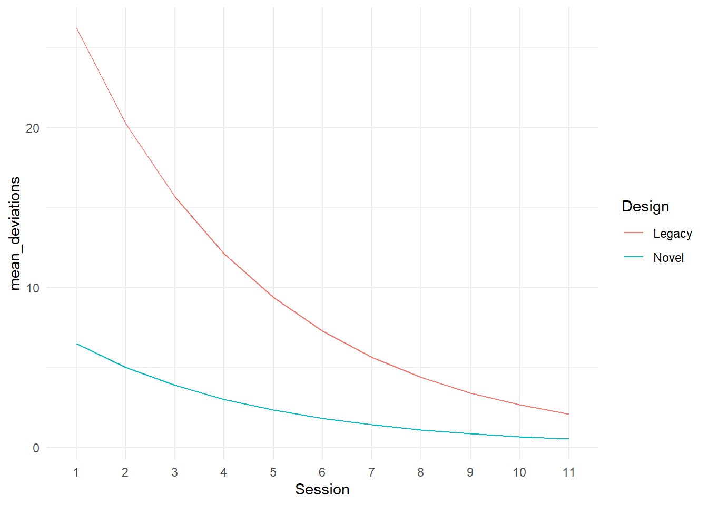
Based on these forecasts, we can make an interesting comparison of the two devices. Notice that initial performance with Novel is around five deviations. With Legacy this level is reached at about the seventh session. As the learning rate is the same for both devices, we can say that the Novel design is always six sessions of training ahead of Legacy.
The conclusion is that log-linearized scales can reduce or even entirely remove saturation effects, if the learning rate is approximately constant. Another requirement is that the lower bound is (practically) really zero. This may sound subtle at first, and for deviations and errors this assumption is legit, but other performance variables have no lower bound of zero. For example, the minimum number of steps to find something on the internet is One. In this case the lower bound is precisely known and the varable can be shifted such that it starts at zero, e.g. mutate(addional_steps = steps + 1). In contrast, Time-on-Task always has a strictly positive lower bound, which is not fixed an probably varies between individuals. Learning curves that approach strictly positive asymptotes \(\omega\) (omega) have the following mathematical form, and this one cannot be reduced to a linearized term. Such a model is non-linearizeable, and requires a truly non-linear model (which can be constructed with the Brm engine, but beyond the scope of this book.
\[y_i = \phi\exp(\rho + x) + \omega\]
where \(\omega\) is the positive asymptote
## perf ~ ampl * exp(-rate * trial) + asym
## <environment: namespace:asymptote>The bottom line is that variables that count errors, deviations or additional steps are great measures for experiments on learning. By model comparison against an OFM you first must assess whether the learning rate is approximately constant. If it is, then a log-linearized model renders a valid learning curve and can be used to predict future performance. When two designs are learned new, as in the IPump case, the difference can be interpreted as saved amount of training. Another interesting application would be how much training is needed for a novel design to actually beat a default design that users are highly trained with.
6.2.1.4 HERE
6.2.2 Logistic (aka Binomial) regression (#logistic_regression)
6.2.2.1 REDACT
In the last section, we have seen how Poisson regression applies, when outcome variables are count numbers. More strictly, Poisson regression applies to count data, when there is no upper limit to counts (or if this limit is extremely large, as in the Smart Smurfer example). When the outcome variable is counts, but an upper limit exists and is known, logistic regression is the better model. Such a situation often arises, when the counts are successes in a fixed number of trials. More precisely, logistic regression has the following properties:
- The outcome variable has a zero lower bound and a fixed upper bound, e.g. number of trials \(k\).
- The linear predictors are on a logit scale, which is reversed by a logistic function.
- The random component follows a binomial distribution.
- Due to the former, the variance of randomness is largest at \(\mu = 0.5\) or \(\eta = 1\) and declines towards both boundaries, taking a characteristic cigar shape.
The most simple form of successes-in-trials measure is when there is only one trial. This is called a dichtotomous variable, and that is very common:
- a user is successful at a task, or fails
- a visitor returns to a website or does not
- a usability problem is discovered or remains unseen
- a driver brakes just in time or crashes
- a customer recommends a product to a friend or does not
- a web user starts a search for information by keyword query or by following links
Most dichotomous outcome variables have a more or less clear notion of success and failure (although not necessarily as in the last example). When the outcome casts a positive light on the design, by convention it is coded as 1, otherwise 0.
In computer science jargon, every dichotomous observation accounts to a bit, which is the smallest amount of information ever possible. Since in inferential statistics the amount of information is tantamount to the reduction in uncertainty, with dichotomous data one usually needs an abundance of observations to reach reasonably certain conclusions. Because the information of a single observation is so sparse, large samples and repeated measures are important when dealing with dichtomous outcomes.
Let us consider an example: early research on foraging strategies of web users revealed that they are extremely impatient companions. They scan a page for visual features, rather than reading [REF: high school students information mall]. Visitors of websites build their first judgement in a time as short as 17ms [REF: Tuch presentation time]. For e-commerce that is a highly important fact to know about their customers and nowadays practically all commercial websites shine with a pleasing visual appearance. But, how would one measure the gratitude of a visitor who actually used the website and may have something to tell beyond visual appeal?
A simple measure for gratitude simply is when a visitor returns to buy more. This is usually a highly available measure, too, as any skilled web administrators can distill such data from the server logfiles with little effort. First, all unique visitors are extracted and if the same visitor returns within a given period of time, this is coded as a success (one) or otherwise failure (zero). We simulate such a data set:
| visitor | returned |
|---|---|
| 63 | 1 |
| 22 | 0 |
| 99 | 1 |
| 38 | 0 |
| 91 | 1 |
| 92 | 0 |
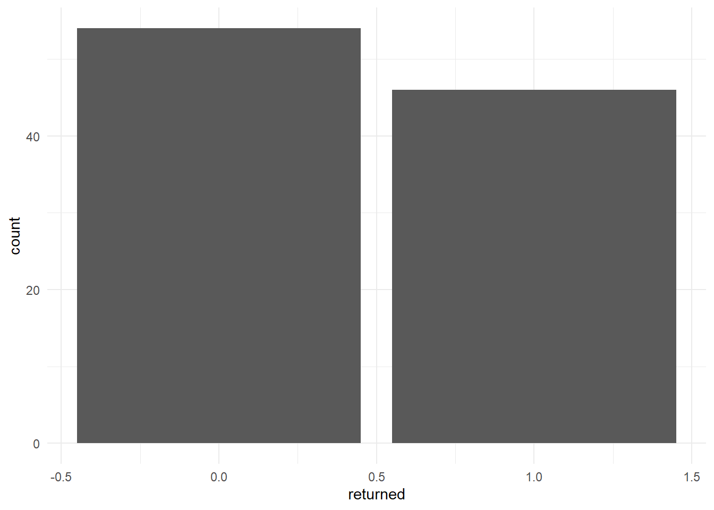
In total, 46% of the visitors return. In order to estimate the return rate together with a statement on uncertainty, we run a logistic regression grand mean model and inspect the coefficient table. Note how the linear formula is completely common ground, but we explicitly pass the binomial family to the regression engine.
| model | type | fixef | center | lower | upper |
|---|---|---|---|---|---|
| object | fixef | Intercept | -0.148 | -0.542 | 0.211 |
As expected from a GMM we retrieve one parameter that reflects the average tendency to return to the site. Recall, that the linear model assumes the predictions to be unbounded. However, in case of return rates, we rather speak of proportions of users to return. As a side note, I try to avoid speaking of probabilities in the context of logistic regression. While being mathematically correct, it sometimes causes confusion with certainty or, beware of this, the p-value.
Proportions are on a range from zero to one. Because the quantity of interest is bounded, a link function is needed that stretches the bounded into an unbounded range. For logistic regression, the logit functions maps the fitted responses \(\mu_i \in [0;1]\) onto the linear predictor scale \(\eta_i \in [-\infty; \infty]\):
\[ \eta_i = \textrm{logit}(\mu_i) \]
The inverse function, commonly called the mean function, of the logit is the logistic function. @ref(logit_logist) shows link and mean functions side-by-side.
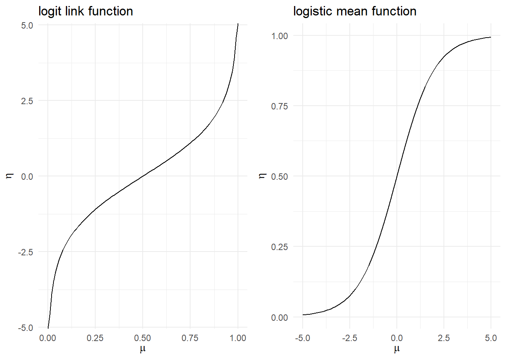
In order to obtain a statement on proportion \(\mu\) (note that in a GMM, there is only one), we therefore have to perform the mean transformation:
\[
\eta = \beta_0\\
\mu = \textrm{logist}(\eta)
\]
The fixef command lets you pass on a mean function. However, this logistic mean function is only useful for intercepts and other absolute group means, as we will see in 6.2.2.3
| model | type | fixef | center | lower | upper |
|---|---|---|---|---|---|
| object | fixef | Intercept | 0.463 | 0.368 | 0.553 |
The apt reader may have noticed that the returners data set has been simulated with an exact return rate of 40%. Despite the sample size of 100, the center estimate seems rather off and hampered by considerable uncertainty. That is precisely because of the low level of information contained in dichotomous variables (one bit). For a reasonably certain estimate one would need many more observations. These can either be obtained through a larger sample or through repeated measures.
Recall the fictional jump-and-run game smart smurfer in @ref(poisson_dist): the goal of the game is that players collect items and for the user experience it is crucial that this is neither too difficult nor too easy. Imagine, that for adjusting the difficulty level, the developers conduct a quick evaluation study, where they place a number of items (trials) in the game and the success rate of a single player is observed in a series of 15 game sessions. We simulate such a data set:
Per session the player has a number of opportunities for collecting an item, which makes it a repeated measures situation. One might expect that we need to include random effects into the model. Later we will see that this is necessary when the sessions were observed on a sample of players with different abilities. However, as long as one can reasonably assume the chance of catching an item to be constant across all sessions, plain logistic regression can deal with successes in multiple trials. In order to estimate a model with more than one trial per observation, it is necessary to add a variable for the number of failures and use a cbind(successes, failures) statement for the left-hand-side of the model formula. This may seem inconvenient, but it allows to have a different number of trials per observation.
| model | type | fixef | center | lower | upper |
|---|---|---|---|---|---|
| object | fixef | Intercept | 0.485 | 0.418 | 0.559 |
## [1] "D_smrf" "D_ret"We turn now to a real case study, the comparison of two medical infusion pumps (@ref(slope_RE)). On both devices (legacy and novel), 25 nurses completed a set of eight tasks repeatedly over three sessions. In @ref(slope_RE) a multi-level model was estimated on the workload outcome. It is tempting to apply the same structural model to success in task completion, using binomial random patterns and logit links.
completion ~ Design*Session + (Design*Session|Part) + (Design*Session|Task)Such a model is practically impossible to estimate, because dichtomous variables are so scarce in information. Two populations encounter each other in the model: participants and tasks, with 6 observations per combination (6 bit). We should not expect to get reasonably certain estimates on that level and, in fact, the chains will not even mix well. The situation is a little better on the population level: every one of the six coefficients is estimated on 400 bit of raw information. We compromise here by estimating the full model on population level and do only intercept random effects to account for gross differences between participants and tasks.
| fixef | center | lower | upper |
|---|---|---|---|
| Intercept | 1.388 | 0.069 | 2.755 |
| DesignNovel | 0.404 | 0.092 | 0.716 |
| Session2-1 | 0.676 | 0.147 | 1.212 |
| Session3-2 | -0.069 | -0.616 | 0.463 |
| DesignNovel:Session2-1 | -0.300 | -1.055 | 0.478 |
| DesignNovel:Session3-2 | 0.287 | -0.485 | 1.068 |
Keep in mind that the estimates are on the scale of the linear predictor \(\eta_i\). This is a boundless space, where we can freely create linear combinations of effects to obtain group means. To get a group mean prediction on the more meaningful measurement scale \(\mu \in [0;1]\), one must first do the linear combination, followed by the mean function.
- the completion rate in the first legacy session is 0.8
- in novel/session 1:
logist(Intercept + DesignNovel)= 0.857 - in novel/session 2:
logist(Intercept + DesignNovel + Session2-1 + DesignNovel:Session2-1)= 0.897 - in legacy/session 3:
logist(Intercept + DesignNovel + Session2-1)= 0.88
6.2.2.2 FINISH
6.2.2.3 Talking odds
When presenting results of a statistical analysis, the linear predictor is likely to cause trouble, at least when the audience is interested in real quantities. The linear predictor scale has only very general intuition:
- zero marks a 50% chance
- positive values increase the chance, negative decrease
- bigger effects have larger absolute values
That is sufficient for purely ranking predictors by relative impact (if on a comparable scale of measurement), or plain hypothesis testing, but it does not connect well with quantities a decision maker is concerned with, for example:
- What is the expected frequency of failure on first use?
- The novel design reduces failures, but is it sufficient?
- Is frequency of failures reduced to an acceptable level by two training sessions?
Above we have used the mean logistic mean function to elevate the absolute group means to proportions. This is an intuitive scale, but unfortunately, the mean function does not apply to individual effects. It is for example, incorrect to apply it like: “the novel pumps proportion of failures in the first session increases by logist(DesignNovel) = 0.6”.
However, there is another transformation, that does the trick. For a better understanding, we have to first inspect, what the logit actually is. The logit is also called a log-odds: \(\textrm{logit}(p) := \log(p(1-p))\). The inner part of the function, the odds, are the chance of success divided by the chance of failure. Odds are a rather common way to express ones chances in a game, say:
- odds are 1 against 1 that the coin flip produces Head. If you place €1 on Head, I put €1 on tail.
- odds are 1 against 12 that Santa wins the dog race. If you place 1€ on Santa, I place €12 against.
If the coefficients are log-odds, than we can extract the odds by the inverse of the logarithm, the exponential function, like in the following call of fixef:
| fixef | center | lower | upper |
|---|---|---|---|
| Intercept | 4.008 | 1.071 | 15.72 |
| DesignNovel | 1.497 | 1.096 | 2.05 |
| Session2-1 | 1.966 | 1.159 | 3.36 |
| Session3-2 | 0.933 | 0.540 | 1.59 |
| DesignNovel:Session2-1 | 0.741 | 0.348 | 1.61 |
| DesignNovel:Session3-2 | 1.333 | 0.615 | 2.91 |
But is it legitimate to apply the transformation on individual coefficients in order to speak of changes of odds? The following arithmetic law tells that what is a sum on the log-odds scale, is multiplication on the scale of odds:
\[ \exp(x + y) = \exp(x)\exp(y) \]
Consequently, we may speak of changes of odds using multiplicative language:
- If you place €100 on failure in the next task with the legacy design in session 1, I place €400.761 on success.
- The odds of success with the novel design increase by factor 1.497. Now, I would place \(400.761 \times 1.497\) = €599.962 on success.
- On success with the novel design in session 2, I would place \(400.761 \times 1.497 \times 1.966 \times 0.741\) = €874.002 on success.
Once, we have transformed the coefficients to the odds scale, we can read coefficients as multipliers and speak of them in hard currency.
6.2.3 Modelling overdispersion
6.2.3.1 REDACT
With count data, we usually expect the variance of randomness to be tied to the location (or magnitude). The Poisson distribution is very strict in the sense that the variance equals the mean.
Real count data frequently has variance that raises proportionally with the mean, but is inflated in comparison to Poisson distribution. This is called overdispersion and must be accounted for. That can either be done by introducing an observation-level random effect [#OLRE], or taking a Negative-Binomial model [#Negbin].
Poisson and binomial distributions are one-parameter distributions. As there is only one parameter, it is impossible to choose location and dispersion independently. In effect, both properties are tightly entangled. For Poisson distributions they are even the same.
\(\mu = \sigma^2 = \lambda\)
For binomial variables, mean and variance both depend on probability \(p\) and are entangled in cigar shaped form, as the dispersion shrinks when approaching either two boundaries. Binomial variance is also affected by the number of trials \(k\), but that hardly matters as the value of \(k\) is exactly known, in by far most cases.
The strict variance assumptions of Poisson and binomial models are frequently violated by real data. The violation happens when real impact factors have not been included in the likelhood equation. Whenever there is one or more impact factors on the outcome at question that the researcher has included or measured, overdispersion inevitably happens.
Let me give you an example. It is common saying that some people attract mosquito bites more than others. But is that really true? A simple lab experiment would do to test the “Sweet Blood” theory. A sample of participants are exposed to a pack of mosiquitos under carefully controlled conditions (time of day, environmental condition, hungriness of mosquitos). We don’t know the mechanisms that makes the blood sweeter, and hence cannot measure it. In the simulation below, it is just assumed that there is a such a property, but in a real study we would not know.
We also don’t have to know it, because if there is an invisible impact factor, we would see that in the extra variance, as compared to the mean:
| mean(bites) | var(bites) |
|---|---|
| 6.85 | 17.8 |
Overdispersion practically always happens in studies involving objects with complex dynamics, such as the human mind. Two solutions exist for overdispersed count data: we can either switch to a two-parameter response distribution, that gives variance more flexibility (see table below).
| canonical | generalization | parameters | limiting case |
|---|---|---|---|
| binomial | betabinomial | \(\alpha > 0, \beta > 0\) | \(\alpha, \beta \rightarrow \infty\) |
| Poisson | negative binomial | NA | NA |
| exponential | gamma | rate, shape | NA |
The alternative is to introduce an observation-level random effect, which is just like the Gaussian distributed variable Sweetness in the simulation above.
6.2.3.2 HERE
6.2.3.3 Negative-binomial regression for overdispersed counts
When Poisson regression is used for overdispersed count data, the model will produce reliable center estimates, but the credibility limits will be too narrow. (The model suggests better certainty than there is.) To explain that in simple terms: The model “sees” the location of a measure, which makes it seek errors in a region with precisely that variance. There will be many measures outside the likely region, but the model will hold on tight, regard these as (gradual) outliers and give them less weight. A solution to the problem is using a response distribution with two parameters. A second parameter usually gives variance of the distribution more flexibility, although not setting it entirely loose. For the Poisson case (i.e. counts without an upper limit) negative binomial distributions do the job, for binomial the beta-binomial applies. Both distributions are so-called mixture distributions. In mixture distributions, the parameter of the “outer” distribution is not constant, but allowed to vary by a distribution itself. Under this perspective, negative binomial distribution is equivalent to a Poisson distribution, if we let parameter \(\lambda\) follow a gamma distribution:

The figure below shows a negative binomial distribution and Poisson distribution with the same mean.

In [#dissolving_saturation] we have seen how log-linearization can accomodate learning curves, using a Poisson model. It is very likely that this data is over-dispersed. To demonstrate overdispersion, we estimate the unconditional learning curve model one more time, with a negative-binomial pattern of randomness:
##
##
## Table: (\#tab:unnamed-chunk-68)Estimates with 95% credibility limits
##
## model parameter type fixef center lower upper
## -------------- --------------- ------ ------------- ------- ------- -------
## M_negbin_lzrm b_DesignLegacy fixef DesignLegacy 3.266 3.136 3.390
## M_negbin_lzrm b_DesignNovel fixef DesignNovel 1.865 1.717 2.019
## M_negbin_lzrm b_session fixef session -0.256 -0.349 -0.165
## M_negbin_lzrm shape shape NA 9.457 6.126 15.095
## M_pois_lzrm b_DesignLegacy fixef DesignLegacy 3.267 3.196 3.334
## M_pois_lzrm b_DesignNovel fixef DesignNovel 1.869 1.759 1.972
## M_pois_lzrm b_session fixef session -0.258 -0.314 -0.200
We observe that the center estimates are precisely the same. The credibility limits are much wider with an underlying negative-binomial distribution. In the CLU table we also see that the neg-binomial model got the new parameter shape, which is not a coefficient. Shape (often called \(\phi\) (phi)) controls over-dispersion relative to a Poisson distribution, but in a somewhat convoluted way:
\[ \textrm{Variance} := \mu + \mu^2/\phi \] The variance is composed of one \(\mu\) which is just the Poisson baseline variance. The second summand adds the overdispersion, which is the reciprocal of \(\phi\) times the squared mean. The smaller phi gets, the more overdispersion had to be accounted for. From this formula alone it may seem that neg-binomial distributions could also account for under-dispersion, but truth is that \(\phi\) must be strictly positive. Phi is too convoluted to be useful as a practical measure for how much over-dispersion there actually is. Once again, we can turn to formal model selection with LOO (leave-one-out). The negative-binomial model is more complex, in that it has one additional parameter. Still, it is the preferred model.
| elpd_diff | se_diff | elpd_loo | se_elpd_loo | p_loo | se_p_loo | looic | se_looic | |
|---|---|---|---|---|---|---|---|---|
| M_negbin_lzrm | 0.0 | 0.0 | -446 | 10.8 | 4.17 | 0.522 | 891 | 21.5 |
| M_pois_lzrm | -36.5 | 12.6 | -482 | 21.6 | 7.33 | 1.138 | 964 | 43.1 |
The bottom line is that whenever there is over-dispersion in count variables, a Poisson model will overstate certainty and a negative-binomial model is appropriate. This is practically always the case and interpreting a neg-binomial model is no different to a Poisson model.
6.2.3.4 Beta-binomial regression for successes in trials
Beta-binomial regression follows a similar pattern as neg-binomial. A two parameter distribution allows to scale up the variance relative to a binomial model [#logistic_regression].
A beta-binomial distribution is created by replacing binomial parameter \(p\) by a \(beta distribution\), with parameters \(a\) and \(b\):
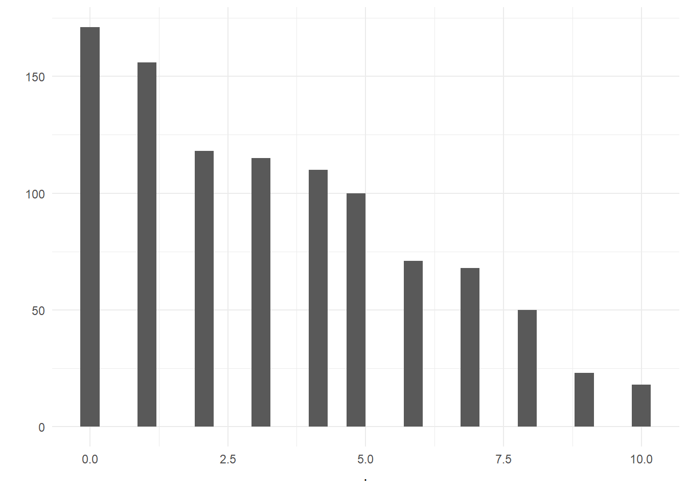
The brms regression engine currently only implements the negative binomial, but not the beta-binomial family. That is a minor problem, because the brms regression engine can be extended. The following code is directly taken from the brms documentation and adds beta-binomial models. The built-in betabinomial distribution takes the parameters a and b from the inner beta distribution. However, for a GLM a parametrization is needed, such that one parameter is the mean (or fitted responses \(\mu_i\)).
Note, how the author of this code created a beta_binomial2 distribution family, by transforming the parameters to \(\mu\) and a dispersion parameter \(\phi\).
| model | parameter | type | fixef | center | lower | upper |
|---|---|---|---|---|---|---|
| M_betabin | b_Intercept | fixef | Intercept | 0.706 | 0.663 | 0.747 |
| M_betabin | phi | shape | NA | 0.998 | 0.983 | 1.000 |
| M_bin | b_Intercept | fixef | Intercept | 0.706 | 0.679 | 0.734 |
6.2.3.5 FINISH_ME
6.2.3.6 Using observation-level random effects
6.2.3.7 EDIT
6.2.3.8 MAKE IPump
With the broad implementation of random effects models in Bayesian regression engines, there is a generic procedure to capture the extra variance even with one parameter distributions. The trick is to introduce an observation-level random effect (OLRE). Recall how we regard variation between members of a population as normally distributed deviations from the population mean, by the example of a Poisson grand mean model with a participant-level (\(p\)) random effect:
\[ \theta_{pi} = \beta_0 + x_p\beta_{0p} \\ \mu_{pi} = \exp(\theta_{pi})\\ \beta_{0p} \sim N(\mu_{p}, \sigma_p)\\ y_{p} \sim \textrm{Pois}(\mu_{ij}) \]
The OLRE is normally distributed but does not cause any bounded range, as it is added on the level of the linear predictor before applying the exponential transformation. Observation-level random effects are completely analogous, except that every observation becomes its own group, in a Poisson grand mean model with added variation:
\[ \theta_{i} = \beta_0 + \beta_{i} \\ \mu_i = \exp(\theta_i)\\ y_{ij} \sim \textrm{Pois}(\mu_{ij}) \]
See, how \(\beta_i\) is a unique deviation per observation \(i\), and how a variance parameter \(\sigma\) appears in an otherwise purely Poisson model. Observation-level random effects are on the linear predictor level, and therefore additive. Compare this to the negative binomial distribution where variance is scaled up, which is multiplication. We find a resemblance with how sums on the linear predictor become multiplications on the fitted responses scale.
For demonstration of the concept, we simulate from an overdispersed Poisson grand mean model with participant-level random effects, and recover it via regression.

## [1] "sim_ovdsp" "D_ovdsp"Random effect variation is accurately recovered from the simulated data. The following two plots show, that the participant latent scores and even the observation levels themselves can be recovered. Every observation gets an accurate measure of how much it had been pushed by unrecorded sources of variation. Practically, we obtain residuals which can be used for model criticism. For example, extreme outliers can be identified and relations between random variation and predicted values (or groups) are open to scrutiny.
| re_factor | center | lower | upper |
|---|---|---|---|
| Obs | 0.305 | 0.264 | 0.350 |
| Part | 0.536 | 0.403 | 0.719 |
Frequently, I reminded the reader to interpret parameters quantitatively by translating their magnitude to statements of practical relevance. For random effects variance this is not always straight forward. One possible way is to make comparative statements on the sources of variance “the variance due to individual differences exceeds all other sources of variation taken together”. OLREs are on the same scale as all other random effects in the model, which makes it a good default reference. A non-default comparison of sources of variance is the one of Dennis Egan, that people cause more variance than designs do. With GLMMs, the marriage of LMM and GLM this claim is testable.
From LMM we borrow a surprisingly simple and general solution, observation-level random effects. So, most of the time we will not need one of those twisted two parameter random distributions to account for overdispersion. With OLRE models we get an estimate that is very similar to residuals, which has proven very useful in model criticism.
## [1] "sim_ovdsp" "D_ovdsp"6.3 Measures of time
Time is a highly accessible measure, as clocks are all around us: on your wrist, in transport stations, in your computers and a very big (and accurate) one is hosted at the Physikalisch-Technischen Bundesanstalt in Braunschweig (Physical-technological federal institute in Braunschweig, Germany). Temporal variables often carry useful information. Reaction time (RT) measures are prime in experimental cognitive studies and have revealed fascinating phenomena of the human mind, such as the Stroop effect or memory priming. In design research, reaction times are also frequently used, but even more common is time-on-task (ToT) as a measure of task efficiency. Formally, both outcome types measure a period of time. I am deliberately making a distinction between the two, because the data generating process of reacting to a simple task (like naming a color) may be different to a complex task, like fidning information on a website.
Temporal variables are practically continuous (as long as one measures with sufficient precision), but always have lower bounds. First, I will introduce two classic types of models that use exponentially or Gamma distributed error terms. Both distribution families assume a lower bound at zero, which is problematic, as we will see. Modern Bayesian estimation engines offer an increasing variety of more exotic response distributions. Among those are Exgaussian response distributions, which works well when the lower bound is positive.
6.3.1 Exponential and Gamma regression
Exponential distributions arise from basic random processes under some very idealized conditions. First, the lower boundary must be zero and second, the rate at which events happen is assumed to be constant rate, just like Poisson distributions assumes a constant \(\lambda\).
Reconsider the subway smurfer example [#distributions], where players collect items in a jump and run game. We have already seen how collection counts can be modelled using Poisson or binomial regression. Another way to look at it is the time between two events of item collection. For demonstration only, we assume such idealized conditions in the subway smurfer example and generate a data set. Exponential distributions are determined by one parameter, the rate parameter \(\lambda\), which is strictly positive. The mean of an exponential distribution is the reciprocal \(1/\lambda\) and the variance is \(\textrm{Var} = 1/\lambda^2\). Like with Poisson regression, variance is strictly tied to the mean.
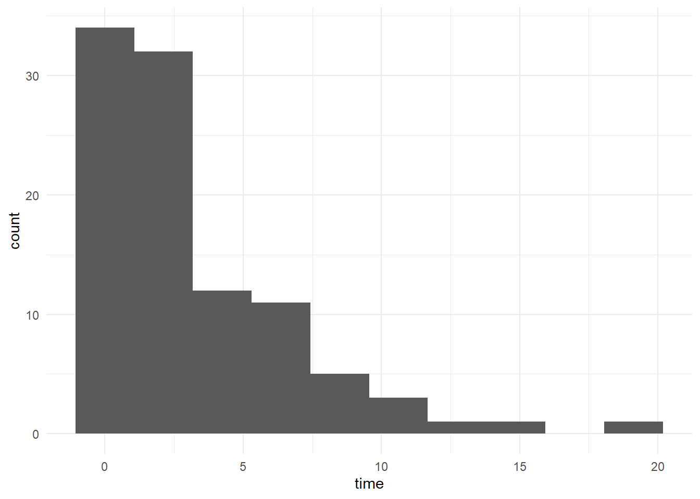
## [1] 3.29## [1] 12.4As the stan_glm engine does not support exponential response distributions, we use brm, instead, and recover the parameter.
| type | fixef | center | lower | upper |
|---|---|---|---|---|
| fixef | Intercept | 3.29 | 2.73 | 4 |
Exponential disribution are rarely used in practice for two shortcomings: first, the strict mean-variance relation makes it prone to over-dispersion. This can be resolved by using observation-level random effects [#OLRE] or using Gamma distributions, which accounts for extra variance by a second parameter. The second problem is the lower boundary of Zero, which will be resolved by using Exgaussian error distributions, instead.
Exponential regression has a single parameter and therefore has the same problem as seen with Poisson and binomial regression before. Only if all events have the same rate to occur, will an exponential distribution arise, which means for behavioural research: never. A general solution to the problem is introducing an observation-level random effect [#OLRE]. Here we will tackle the problem by using continuous, zero-bounded distributions with two parameters, the Gamma family of distributions. While the two parameters rate and shape do not directly translate into location and dispersion as with Gaussian, it provides the extra degree of freedom to set them almost independently. The only limitation is that variance rises with the mean, but as we have argued in ??, this is rather a desired feature than a problem. In the following, we simulate Gamma distributed observations.
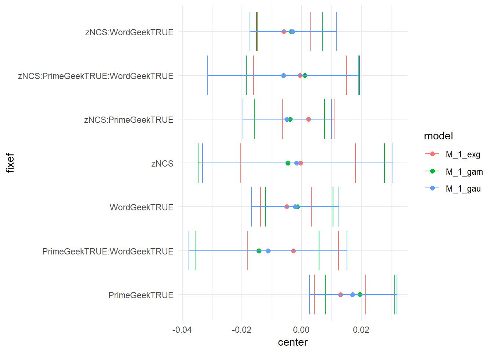
## [1] 7.61In comparison to the exponential distribution above, a significant difference is that the mode of the gamma distribution (its peak) is not fixed at zero, but can move along the x-axis. That makes it appear a much more realistic choice for temporal data in behavioural research. We estimate a simple gamma GMM on the simulated data. For historical reasons, brm uses the inverse link function (\(\theta = 1/\mu\)) for Gamma regression per default, but that does not actually serve the purpose of link functions to stretch \(\mu\) into the range of real numbers. Instead, we explicitly demand a log link, which makes this a multiplicative model.
| type | fixef | center | lower | upper |
|---|---|---|---|---|
| fixef | Intercept | 7.64 | 6.7 | 8.71 |
Both, Exponential and Gamma distributions support the range of real numbers including zero. The weak point of both models is that they have zero as their natural starting point. As we will see in the following section, this assumption is usually violated with RT and ToT data. So, what are they good for, after all? These two models are routinely used for the time intervals (TI) between events that are triggered independently. In nuclear physics the individual triggers are atoms, each one deciding on their own when to decay. If you measure the interval between two decays the time interval is exponentially distributed. (And if you count the neutrons per time interval, the result is a Poisson distribution).
Analog situations can be found in service design and logistics. Take the exanmple of for customer support systems. Customers are like atoms in that their decision to file a request is usually independent from each other. Just by chance it can truly happen that two customers call the service center practically the same moment, so that the lower bound of Zero can actually be reached by some observations. Overwhelmed hotline queues do not make people happy, if they have technical problems. When planning a support system, the risk of angry customers has to be weighed against the costs of over-staffing. A good design would hit a certain sweet spot and in the ideal case there would be a predictive model of inflow rate of customers.
6.3.2 ExGaussian regression
The problem with RT and ToT data is that Zero is not a possible outcome, as any task uses up a minimum time to complete. For example, the table below shows the minimum ToT for finding the academic calendar on ten university websites (case Egan). This varies a lot between designs, but is never even close to zero. The last column puts the minimum observed ToT in relation to the observed range. On two of the websites, the offset was even larger than the obvserved range itself, hence the problem of positive lower boundaries is real in user studies.
| Task | Design | min_time | range | min_time/range |
|---|---|---|---|---|
| academic calendar | VU Brussel | 21 | 130 | 0.162 |
| academic calendar | KU Leuven | 52 | 40 | 1.300 |
| academic calendar | UGent | 8 | 70 | 0.114 |
| academic calendar | University of Antwerp | 3 | 7 | 0.429 |
| academic calendar | UHasselt | 21 | 48 | 0.438 |
| academic calendar | Leiden University | 130 | 181 | 0.718 |
| academic calendar | VU Amsterdam | 207 | 188 | 1.101 |
| academic calendar | RUG | 119 | 132 | 0.902 |
| academic calendar | University Tilburg | 24 | 39 | 0.615 |
On the first glance, that does not seem to pose a major problem for Gamma distributions, as the left tail vanishes the more a Gamma distribution is shifted to the right, the impossible regions get smaller. However, Gamma distributions inevitably become more symmetric at larger values. A Gamma distribution far to the right has almost equally long tails and we may eventually use a Gaussian distribution, instead. As there is no separate parameter controlling the skewness of the curve it may happen that the random component captures the amount of variance, but overdoes the left tail, which introduces a bias on the coefficients. The following graphic illustrates the mean-variance-skew relationship on three Gamma distributions that move from left to right (M), keeping the variance constant (V):

We have seen so far, that distributions with one parameter (Poisson, binomial, exponential) have a fixed relationship between location and dispersion. In order to vary location and dispersion independently, a second parameter is needed (neg-binomial, beta-binomial, Gamma, Gaussian). Only three-parameter distributions can do the trick of setting skewness separately. So called exponentially modified Gaussian (Exgaussian) distributions are convolutions of a Gaussian distribution and exponential distribution and have three parameters, \(\mu\), \(\sigma\) and rate \(\beta\). Very roughly, the Gaussian component controls location and dispersion whereas the exponential part adjusts the skew. When \(\beta\) is large in comparison to \(\mu\), the distribution is more left skewed. With this additional degree of freedom we can simulate (and estimate) distributions that are far to the right, have strong dispersion and strong skewness. The following plot repeats the right-furthest Gamma distribution from above and adds a Gaussian and Exgaussian distributions with the exact same mean and variance.
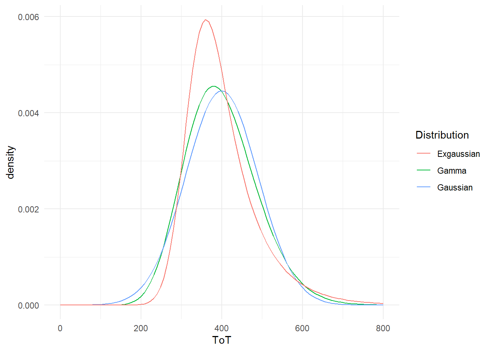
The Gamma distribution in this example starts approaching a the perfect bell curve of the Gaussian distribution. In contrast, the exgaussian distribution takes a steep left climb followed by a long right tail, which is caused by its pronounced exponential component. We do the usual exercise to simulate a grand mean model and recover the parameters with the help of the brm engine:
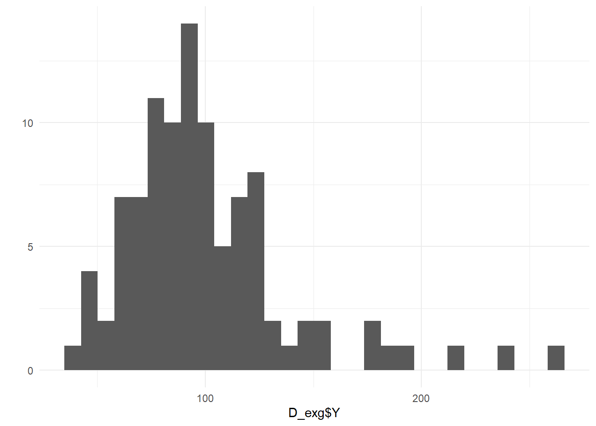
| type | fixef | center | lower | upper |
|---|---|---|---|---|
| fixef | Intercept | 99.4 | 92.9 | 107 |
Noteworthy, for Exgaussian models the brm engine uses the identity link function by default. While this is rather convenient for interpretation, it could theoretically lead to impossible predictions. As we will see later, the exgaussian is not immune, but robust to impossible predictions because of its tiny left tail. Any linear impact factor, like an experimental treatment can push it 150 ms to the left with insignificant risk of impossible predictions.
All GLM family members introduced so far are established, have been presented in many textbooks and are routinely used in research of all kinds. The Exgaussian is a newcomer. It does not come with a solid background in physical systems and may very well be considered just a hack. The following two sections examine Exgaussian models more closely and sets them in competition against Gamma and Gaussian error terms. We will be using primarily graphical methods here, but will come back these cases in chapter [#WM] with a more formal approach.
6.3.2.1 Reaction times
In experimental studies, the inertia of the nervous system sets a limit larger than zero for reaction times. This is partly due to to some hard electrochemical and biomechanical limits of the peripheral systems. (Octopuses have decentralized nervous system for a reason!) Nerve cells and muscle fibers are slow working horses. The same goes for our minds. Reportedly, they are blazingly fast at complex tasks, such as recognizing colors and written words. Still, there always is a minimum time necessary to collect an idea from the memories and activate the surrounding nodes. Experimental reaction times have a positive minimum and it is not much of a stretch to imagine that this is a sharp limit.
In the Hugme case, we tried to pin down the hypothetical Geek personality. We used Need-for-cognition as a predictor for reaction times from the semantic Stroop task. Like in the original Participants must name the color of words, but these are non-color words from two categories (geek/non-geek). These words are preceded by Geek/non-geek pictures. The theory goes that a real geek, when seeing an open computer case followed by “root” will briefly reminisce and be distracted from the primary task. It did not work this way at all and we only saw a few miniscule effects. That is good news for the analysis here. The only effect was that Geek primes caused a minimal delay. Because the data is not contaminated by any factors, we can use a three multi-level CGMs to compare how Gaussian, Gamma and Exgaussian can fit experimental reaction times. Let’s take a first look some parts of the data:
Most of the participant-level frequency distributions of RT have a clear cut-off at around .25 seconds. The steepness of the left climb varies between participants, but some at least are rather sharp, with a right tail that is leveling off slowly. When compared to the illustrations above, it seems that an Exgaussian model could accomodate this data well.
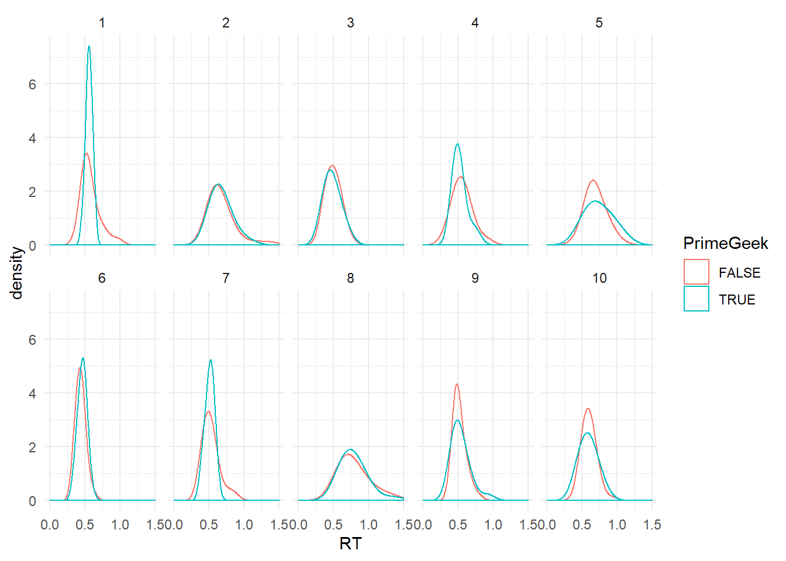
In the following, we run three CGM models with Exgaussian, Gamma or Gaussian response distributions. For the subsequent analysis, multi-model posterior distributions and posterior predictive distributions are extracted.
Note that because the comparison below requires the predictive posterior distribution. With several hundred observations, this results in a very large object. To prevent running into a memory limit, we crank it up (memory.limit) and thin out the number of posterior predictive samples by factor 5.
The below plot shows the population-level effects for the three models. The center estimates are very close, which means that neither of the models has a significant bias. However, the Exgaussian model produces much tighter credibility intervals. We have seen such an effect before, when a Poisson model produced tighter intervals than the Negbinomial model. Here it is the other way round: the more flexible model produces better levels of certainty.

The following residual plot give us a hint why this might be so: Apparently, the Exgaussian model takes a much steeper left climb, whereas
In any case, if there is a reason to prefer the Exgaussian model, we should primarily see that in how the residuals are shaped. The Exgaussian distribution has one more degree of freedom, which can be used to set an arbitrary skew. The following reveals that the extra flexibility of the Exgaussian has been employed. Both, Gaussian and Gamma are almost symmetric, whereas the Exgausian takes a steeper left climb. The three distributions have almost the same right tail, but the left tail of the Exgaussian is smaller and the extra probability mass has moved to the center.
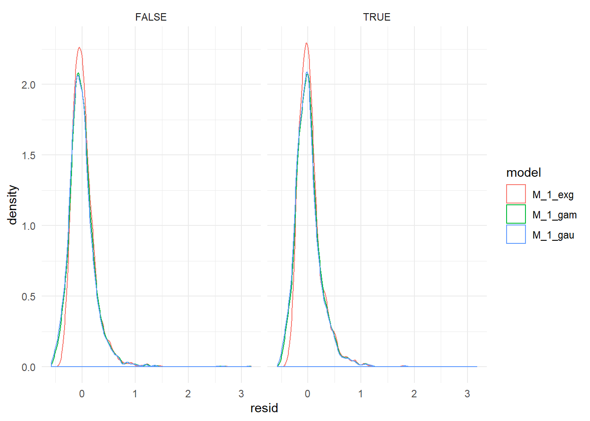
We can carefully conclude that the Exgaussian may be very useful for analyzing pychological experiments as it seems to better accomodate reaction times, resulting in a better level of certainty. Given the novelty of Exgaussian models, it is recommended that researchers carry out a careful multi-model analysis. In [#model_selection] we will come back to this case with a more formal approach and confirm that the Exgaussian has the better predictive accuracy.
6.3.2.2 Time-on-task
Experimental psychologists call the Stroop task a complex one. But, essentially it is a decision between three options and minimal processing time is rather short. Compared to tasks in usability studies, such as finding information on websites or renting cars online, this is almost nothing. Also, the complex dynamics of the task are rather different. For example, a single user error at the begin of a task sequence can have dramatic consequences, such as getting lost on a website. While ToT data also has a strictly positive lower boundary (the fastest way of achieving the goal), it often has a much wider spread and more pronounced
We compare the three patterns of randomness on the CUE8 data set, which contains ToT measures on five tasks on a car rental website. In this study 14 professional teams took part with two conditions: remote and moderated sessions. As data from the remote condition is contaminated with cheaters, we only use the moderated sessions. In order to compare the impact of the chosen distribution on the coefficient estimates, we include the factor Task as a fixed effect (with treatment contrasts), despite this not being the most meaningful.
Note that the coefficients are on a log-scale for the practical reason that Gamma models are sometimes difficult to estimate on an identity link. Also, when speaking of ToT, it makes sense to speak multiplicative, such as “ToT with Task A is 80% of task B”.

Different to the reaction times in the previous section, the three models produce rather different coefficients. These effects are multiplicative and for Task 3, the three models even disgree on whether this task takes longer than Task 1 (Intercept), which in turn is the only effect where the three models seem to agree.
Inspecting the residual distributions yields a different pattern as with reaction times: generally, the left skewness is much less pronounced and Gaussian and gamma even tend to be right skewed. Strikingly, the residuals of the exgaussian models sit much tighter around the center, which corresponds with the narrower credibility intervals for the fixed effects.
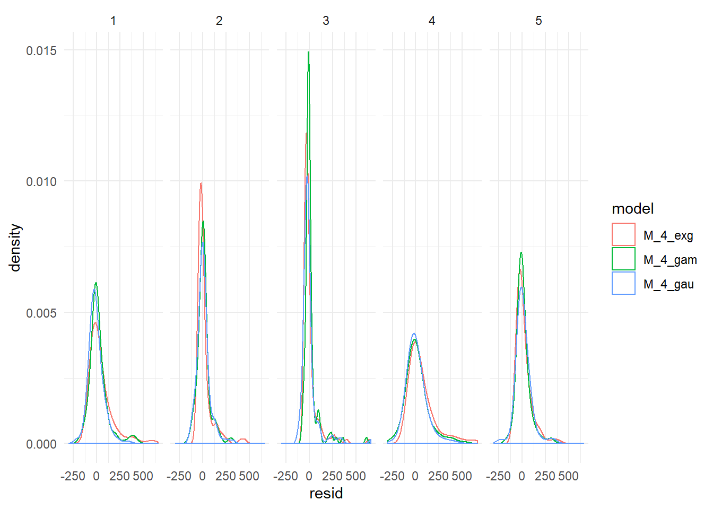
6.3.2.3 EDIT: Move RT model selection up
In general, it seems that Exgaussian models for RT and ToT accomodates left skewness better and produces estimates that are more conservative and certain at the same time. Could it be true, that Gaussian and gamma models overestimate group mean differences for left skewed RT and ToT responses? We examine this possibility by simulating a well-known experiment using an exgaussian distribution.
One last issue remains to get clarified: using the identity link for exgaussian models is very convenient and is probably much safer as compared to Gaussian models with their longer left tails. But, what risk is there to get impossible, i.e. negative, predictions? We check this on the posterior predictive distributions of both studies, CUE8 and Hugme. The following table shows the proportion observations, that get a negative 2.5% credibility limit assigned:
| model | mean(lower < 0) |
|---|---|
| M_1_exg | 0.000 |
| M_1_gam | 0.000 |
| M_1_gau | 0.000 |
| M_4_exg | 0.015 |
| M_4_gam | 0.000 |
| M_4_gau | 0.712 |
6.3.2.4 REDACT
For our RT data, impossible predictions is not a big issue with any of the models, as all 2.5% quantiles are positive. That is different for ToT: while the gamma model is inherently immune to negative predictions, the exgaussian model produced a few impossible lower 2.5% limits (around 3%). The Gaussian model is extremely off: more than 70% of all predictions have impossible lower 2.5% limits.
In the scientific literature, the coverage on what random pattern to use for RT and ToT data is meager at this moment. Probably, that is due to the lack of user-friendly engines supporting the more exotic GLM family members, gamma or exgaussian regression. The brms engine covers a much broader set of distributions than any other implementation before and researchers have the choice. This chapter attempted to provide theoretical arguments as well as empirical indications that the exgaussian regression is a better choice than Gaussian and gamma. First of all, it accomodates the strong left skew of RT and ToT much better than the gamma, which takes a too symmetric form when far from the left boundary. Second, it is reasonably robust to impossible predictions, even when using the convenient identity link function. Third, and that is almost too good to be true, it massively improves certainty in predictors. Possibly, exgaussian models are more efficient for carving out delicate cognitive effects in comparison to Gaussian models (not to mention non-parametric tests).
However, as the discussion has not even fully started, to declare it settled would be premature. In contrast, the aim of this chapter was to illustrate a semi-formal approach that reseachers can follow to choose among the candidate models for their specific RT and ToT data. Data from other RT paradigms might take different shapes. For example, when measuring RT by events in EEG signals (rather than actual key presses), motor time plays a much smaller role, pushing RTs closer to the left boundary. Then, the exgaussian model might produce higher rates of impossible predictions and the gamma model could sufficiently accomodate the left skewness. Note that even using a log link on the exgaussian model can produce visits to the negative range. When both accomodate the left skew equally well, the gamma model is to be preferred as it never produces impossible predictions and is more parsimomous.
That being said, the brms engine offers even more opportunities. First, it supports two more distributions with an offset component: the shifted log-normal and the Wiener distribution. Interestingly, the latter grounds on one of the few formally specified cognitive process models, the diffusion model for simple choice tasks. All four parameters of the Wiener distribution are directly linked to individual elements of the cognitive process. This brings us to the second relevant extension of brms, which I will not fully cover, but is worth mentioning: distributional models. The vast majority of statistical analysis capitalizes on the location parameters. We ask whether an increase in a continuous predictor causes an increase in the outcome or if one group has a higher average than the other.
Only in the analysis of random effects have we drawn conclusions from dispersion parameters, such as to test Egans claim. In design research, the variance in performance is a crucial issue. To give another example: reportedly, several areas of cognitive functioning deteriorate with age, on average, but variance typically increases. It was the very idea of Dennis Egan that designs should not just improve performance on average, but also keep variance at a minimum. Hence, linking variance to predictors, such as design and age, can be a fruitful endeavour under the paradigm of robust designs. For RT the beforementioned Wiener distribution matches RTs in simple choice tasks and every parameter corresponds with an element in the so called diffusion model. In design research, such ideas are almost unexplored. Perhaps, one day a researcher finds that the gaussian and the exponential component are influenced by different design features.
6.4 Rating scales
In classic design research of the last millenium, die-hard Human Factors researchers have mainly been asking objectively sounding questions, like:
- Can a user achieve accurate results with the system?
- Can they do so in less time?
- Is the number of errors reasonably confined?
For professional, and especially critical, systems, these are highly valid questions, indeed. The purpose of a medical infusion pump is to improve the health status of a patient by accurately and reliably delivering medication into the bloodstream and the extent to which this can be measured dircetly.
However, starting with the 1990s, wave after wave of novel electronic entertainment systems and digital gadgets rolled over the comsumer mass market. The purpose of a video recorder or a smartphone is to deliver joy … and to be sold in large batches. The sole purpose of a commercial website is to sell and nothing else. With the new millenium, design researchers began to recognize what consumer psychologists had discovered two decades earlier: users are not rational decision makers in a utilitarian sense. When people decide to adopt (or buy) a new system, this is only partly driven by their expectation of productivity. These additional expectations are commonly called hedonistic values and cover a broad class of human needs, such as:
- positive emotions
- expression of self
- social connectedness
- aesthetic perception
- personal growth
Whether or not these concepts are well-defined from a psychological point-of-view is beyond the scope of this book. What matters is that these concepts are so elusive that the most sincere researchers have not yet found objective criteria to measure them. Instead, almost everyone resorts to use of self-report rating scales, like this one:
How beautiful do you perceive the user interface to be?
unattractive 1 – 2 – 3 – 4 – 5 a piece of art
If you use a 5 point rating scale like this one to measure perceived beauty, participants have to convert their gut feeling into a number, which involves the following three processes somewhere in their minds:
- anchoring
- introspection
- binning
By anchoring participants establish an idea of how ugly or beautiful something has be to get an extreme rating of 1 or 5. These imaginary endpoints define the absolute range of the rating scale. The researcher might early on give explicit or implicit cues to let the participant guess the range the researcher has in mind. If an experiment is overtly about web design, then probably “very ugly” means the least attractive commercial website the participant can think of. However, participants old enough to remember web design in its infancy (say the early attempts of disney.com), may end up with a lower anchor than today’s kids. If too few cues are given upfront, participants will probably adjust their anchors to the stimuli they see throughout the experiment. Probably, it will make a difference for what 1 or 5 mean, when the set of stimuli contain just websites, or websites and impressionist paintings and screenshots from 1980 splatter movies.
By introspection participants intuitively assess the intensity of their real feelings as compared to the anchors. Reportedly, feelings are influenced by:
- visual simplicity
- prototypicality
- second exposure
- Gestalt principles
- fluency of processing
- attribute substitution heuristics
- color aesthetics
- fashion
- previous stimuli
- current mood
- a person’s history
- and cultural background
By binning the participant mentally divides the absolute range into five categories that are either fuzzy or defined by stereotypes, like “It must look at least as elegant as a certain other website to get a 4.”
As the outcome of anchoring, introspection and binning are not under the control of the researcher, the response patterns can vary between participants. Let’s consider a few possible patterns of participants (and their dramatic stories):
- A is undecisive and stays in the center region
- B has a crush on the experimenter and responds slightly more positive
- C politely avoids the negative extremes
- D is a human rights activist and habitually treats the seven bins equally.
- E is annoyed by the experiment (rightly so) and falls into a dichotomous response pattern: 1 or 5
- F is a surrealist and has a completely unique way to “look at things”.
Many unkowns are in the game. Only one special case we can alleviate with the multilevel modelling tools in our hands. Anchoring can (but not necessarily does) result in a constant shift between participants. Compare participants A and B: A collects almost all stimuli in categories 2, 3 and 4, whereas B uses 3, 4 and 5. This is not much else than a participant-level intercept random effect. Unfortunately, the situation can be more difficult than that. When participants differ in how extreme they set their endpoints, like C and D, than their responses will differ in variance. The maximum variance, however, will be found in participant E.
To speak of a real case: In the IPump study, a single-item rating scale was used to measure mental workload. The results suggest that all participants used the lower range of the scale, but differed vastly in where they set their upper point. Figure XY orders participants by the maximum value they used. This is obviously related to variance, but seemingly not so much with location. It does not suffice to use a response distribution with mean-variance relationship, as we used to. All these issues make rating scales peculiar and we should not pretend they have the same neat arithmetic properties as objective measures.
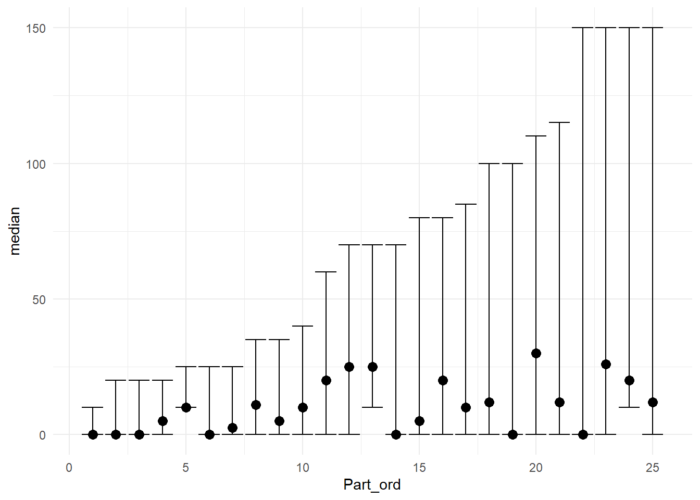
Setting the idiosyncratic rating scale responses aside, how does a common rating scale appear in our framework of link functions and patterns of randomness? Rating scales are bounded on two sides and we already know what that means: a suitable model for rating scales will likely contain a logit link function and a distribution of randomness that is bounded on two sides.
A real problem with rating scales is that they often are discrete. Most scales force participants to give their answer as a choice between five or seven ordered levels. When the response variable has just a few levels, ordinal regression is a good choice. Ordinal regression itself is a generalization of logistic regression.
However, with most properly designed self-report instruments, a scale comprises several items, because only that can sufficiently reduce measurement error and allow for in-depth psychometric assessments. Take the well-known Cronbach \(\alpha\), which assesses reliability of a scale by correlating every items score with the sum score. Obviously, that only makes sense when there are multiple items. While from a psychometric perspective, single-item scales are susceptible, there can be situations where a researcher may use a validated single item scale for pragmatic reasons. Especially, when measures happen in situ, such as during a usability test or even a real operation, being brief and unobtrusive might be more important than good quality of measures.
With multi-item rating scales, one also has the possibility to build a psychometric multi-level model, where items are considered a sample of a population of possible items. That is actually a very good idea, as the item-level random effects control for differences in item location. For example, the following item is likely to produce generally lower beauty ratings than the one shown earlier, because the anchors have been moved downwards:
How beautiful do you perceive the user interface?
like a screenshot from a splatter movie 1 – 2 – 3 – 4 – 5 quite attractive
Unless one builds such a psychometric multi-level model, ordinal regression is not very suitable for multi-item scales and here is why: The sum (or mean) score is still binned, but more finely grained. A sum score over three seven-binned items already has 21 bins, which would result in an inflation of number of parameters in ordinal regression.
As a rescue, one might well regard a measure with 21 bins as continuous . Furthermore, there actually is no strong reason to use binned rating scales at all. So called visual analog scales let participants make continuous choices by either drawing a cross on a line or move a slider control. For sum scores and visual analogue scales, the problem of choice reduces to a logit link function (they still have two boundaries) and a continuous distribution bounded on both sides. That is precisely what is behind beta regression and, as we shall see, this distribution is flexible enough to smooth over several of the rating scale pathologies that were just discussed.
6.4.1 Ordered logistic regression
When the ordinal response has a low number of response categories (between 4 and 7), ordinal regression applies. Recall logistic regression: the response falls into one of two categories, which are coded as 0 and 1. Although not in a strict sense, the two categories can often be thought of as in an order: success is better than failure, presence more than absence and a return better than staying away. Instead of two categories, we can also conceive the situation as a threshold between the categories, that needs force to jump over it. Any positive impact factor \(x_i\) can then be thought of as such a force that pushes a response probability to the higher category, by the amount \(\beta_i\) (on logit scale). At the same time, the intercept \(\beta_0\) represents the basic log-odds of falling into category 1 in a default state, that is \(x_i = 0\).
In ordinal regression, this idea extends to cases with more than two ordered response categories. The only arising complication is that with two categories, we have one threshold to overcome, whereas with three categories there are two thresholds and generally, with \(c\) categories, there are \(c - 1\) thresholds. Ordinal regression deals with the problem by estimating \(c - 1\) intercept estimates \(\beta_{0[k]}\). Each threshold intercept \(\beta_{0[k]}\) represents the probability (on logit scale) that the response falls into category \(k\) or lower, or formally:
\[ \text{logit}(P(y_i \leq k)) = \beta_{0[k]} \]
Let’s see this at the example of the BrowsingAB case, first. User ratings have been simulated with seven levels:
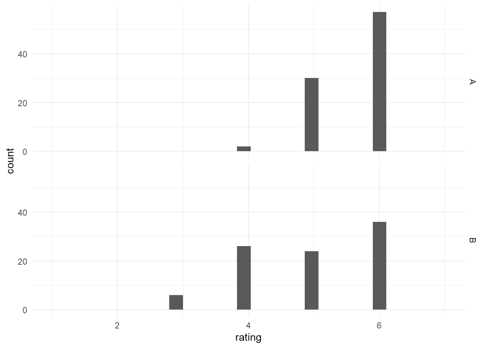
The brms regression engine implements ordinal regression by the family cratio (cumulative odds ratio ) with a default logit link function.
| fixef | center | lower | upper |
|---|---|---|---|
| NA | -13.411 | -53.335 | -5.928 |
| NA | -13.326 | -53.333 | -5.896 |
| NA | -4.053 | -5.020 | -3.251 |
| NA | -2.281 | -2.778 | -1.796 |
| NA | -1.121 | -1.525 | -0.734 |
| NA | 1.321 | 0.846 | 1.851 |
| DesignB | -0.856 | -1.317 | -0.410 |
The six intercepts correspond with the thresholds between the seven levels. It is no coincidence that the intercept estimates increase by order, as they are cumulative (the “c” in cratio). The first intercept estimate represents (the logit of) the proportion of responses \(y_i \leq 1\), the second \(y_i \leq 2\) etc. The Design effect has the usual interpretation as compared to logistic regression, an increase in logit. The only difference is that it refers to all six reference points. The expected proportion of responses equal to or smaller than 2 for design A is:
\[ \pi(y_i \leq 2|A) = \\ \text{logit}^{-1}(\beta_{0[2]}) = \\ \text{logit}^{-1}(-13.3) = \\ 1.674\times 10^{-6} \]
The expected proportion of responses equal to or smaller than 2 for design B we get by the usual linear combination:
\[ \pi(y_i \leq 2|B) = \\ \text{logit}^{-1}(\beta_{0[2]} + \beta_1) = \\ \text{logit}^{-1}(-14.2) = \\ 6.808\times 10^{-7} \]
All coefficients are shifting all thresholds by the same amount (on the linear predictor scale). You can picture this as a single puppetier controlling multiple puppets by just one stick, making them dance synchronously. As long as the ordinal scale has only a low number of bins, that keeps the number of parameters at a reasonable level. Just imagine, you were estimating an ordinal multilevel model and all participant-level effects were five or sevenfolded, too. However, the equidistancy of effects on bin thresholds is an assumption by itself, and in the presence of response styles on rating scales, it cannot be taken for granted .
Besides that, the ordinal model appears very snug to the structure of the data. It does not wipe over the fact that the response is discrete and the thresholds represent the order. Conveniently, effects are represented by a single estimate, which one can use to communicate direction and certainty of effects. On the downside, communicating absolute performance (that is, including the intercept) is more complicated. When presenting predictions from an ordinal model one actually has to present all thresholds, rather than a single mean. In practice that probably is less relevant than one might think at first, because predictions on self-report scales is less useful than metric performance data. Ordinal data also does not lend itself so much to further calculations. For example, you can use ToT measures on infusion pumps in calculating the required staffing of an intensive care unit, because seconds are metric and can be summed and divided. In contrast, it does not make sense to calculate the cognitive workload of a team of nurses by summing their self-report scores. The only possibility is to compare the strengths of predictors, but that does not require predictions.
6.4.2 Beta regression
One of the most futile discussions in methodology research to my mind is whether one should use a four, five or seven binned Likert scale. From a pure measurement point of view, more bins give better resolution, the ultimate consequence being not to bin at all, that is using continuous rating scales. At the same time, many rating responses come from multiple item scales, which multiplies the number of bins. Speaking of ordinal regression, it seems reasonable to have seven intercepts for a single item scale, but who would want 14 or 21 for a two or three-item scale? And most scales have more items than that, which is good from a psychometric perspective.
In fact, psychometric research in the process of developing rating scales routinely uses a method called confirmatory factor analysis, which derives from the Gaussian linear model and inherits its assumptions. Not surprisingly, most research applying the very same instruments also use plain linear models. It seems fair enough to take a multi-item scale as a continuous measure, but given the framework of GLM, it is unnecessary (to put it mildly) to go along with the assumptions of Normality and linearity. While the link function for a double bounded response variable is simply the logit, the only missing ingredient is a double bounded error distribution. Enter beta distribution!
We demonstrate beta regression on rating scales at the example of the CUE8 study. This study aimed at assessing whether remote usability testing arrives at the same ToT measures as in moderated sessions. As we have seen in [CROSSREF], the difference is marginal. But, rating scales are susceptible for all kinds of cognitive and social biases. For that reason, a golden rule for user test moderators is to constantly remind participants to not blame themselves for errors. Reportedly, test moderators also do help participants (after counting to 10) in order to minimize frustration (and maximize information flow). What could the presence or absence of a moderator do to satisfaction ratings? Perhaps, remote participants feel the lack of assurance and support as higher levels of frustration. Furthermore, it is not unlikely that satisfaction ratings are sensitive to idiosyncratics in the process and setting of the user test, such that we could even expect differences between teams.
Before we build the model, there are two issues to regard: First, the boundaries are 0 and 1, which requires a rescaling of responses into this interval. The SUS scores are on a scale from 0 to 100 and a divisor of 100 would produce the desired interval. Second, the responses must actually lie strictly between 0 and 1, excluding the boundaries. On (quasi)continuous scales, it seems not very likely to have 0 or 1 as response, but it can happen. Indeed, participants in the CUE8 study have responded with a satisfaction rating of 100 quite often.
A practical solution is to scale the responses in such a way as to avoid the two boundaries, which is what the following hack does.
- add a tiny value to all responses
- create a divisor by adding twice that value to the maximum value the responses can take
- divide all responses by that divisor
You may find it inappropriate to mangle a response variable in such an arbitrary way. However, keep in mind that the levels of ordinal responses are highly arbitrary. In terms of measurement theory, all transformations that maintain the order are permitted for ordinal scales. For the following analysis, the data set was further reduced by averaging the scores across tasks and excluding probable cheaters with a ToT < 30s.
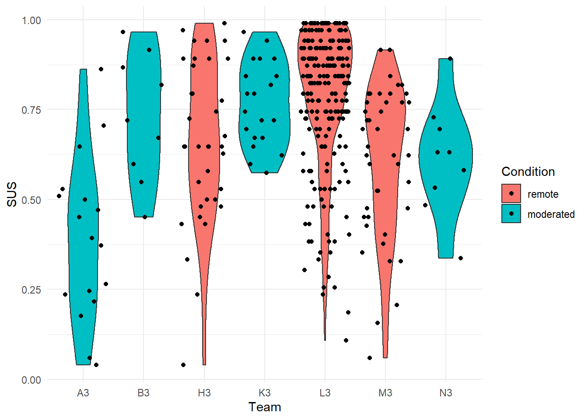
## Family: beta
## Links: mu = logit; phi = identity
## Formula: SUS ~ Condition + (1 | Team)
## Data: . (Number of observations: 363)
## Samples: 4 chains, each with iter = 2000; warmup = 1000; thin = 1;
## total post-warmup samples = 4000
##
## Group-Level Effects:
## ~Team (Number of levels: 7)
## Estimate Est.Error l-95% CI u-95% CI Rhat Bulk_ESS Tail_ESS
## sd(Intercept) 0.81 0.39 0.34 1.95 1.01 554 231
##
## Population-Level Effects:
## Estimate Est.Error l-95% CI u-95% CI Rhat Bulk_ESS Tail_ESS
## Intercept 0.79 0.52 -0.51 1.78 1.00 567 234
## Conditionmoderated -0.34 0.70 -1.70 1.11 1.00 1124 1088
##
## Family Specific Parameters:
## Estimate Est.Error l-95% CI u-95% CI Rhat Bulk_ESS Tail_ESS
## phi 4.13 0.30 3.56 4.74 1.00 3390 2547
##
## Samples were drawn using sampling(NUTS). For each parameter, Bulk_ESS
## and Tail_ESS are effective sample size measures, and Rhat is the potential
## scale reduction factor on split chains (at convergence, Rhat = 1).| fixef | center | lower | upper |
|---|---|---|---|
| Intercept | 0.798 | -0.506 | 1.78 |
| Conditionmoderated | -0.343 | -1.699 | 1.11 |
| type | fixef | re_factor | center | lower | upper |
|---|---|---|---|---|---|
| grpef | Intercept | Team | 0.71 | 0.344 | 1.95 |
Do participants in remote sessions feel less satisfied? There seems to be a slight disadvantage, but we cannot confirm this with sufficient certainty. In contrast, the variation between teams is substantial, which indicates that SUS ratings are not independent of the particular setting. That is rather concerning for a widely used and allegedly validated rating scale.
6.4.3 Distributional models
The framework of GLM, as flexible as it has proven to be up to this point, has one major limitation: it renders the relationship between predictors and the location of the response. We only think in terms of impact factors that improve (or damage) average response times, error rates, satisfaction ratings etc. one would think that multi-level models deal with variance to a large extent, and they do. But, they only give us the variance of a certain effect on a set of objects. That is absolutely not the same as asking: “Do teams in CUE8 differ in the variation of responses?”.
That brings me to the final feature of modern regression modelling in the scope of this book: GLMs greatly enhanced the scope of modelling by giving us the choice of response distributions and linearizing functions. Still, all models introduced so far establish an association between predictors and the fitted response \(\mu\), only. However, all but the one-parameter distributions come with additional parameters that that form the shape of the error distribution, such as its variance or skew in the case of Exgaussian models. Experimentalists usually consider error variance as a nuisance parameter, but in design research it can well be informative.
Strong variance can be a real problem, because this implies that extremely poor performance is possible, increasing the risk of hazards. In hazardous environments, variance is a crucial parameter should be track carefully. Especially, a design improvement on average is not necessarily accompanied by less variance (other than the mean-variance relationship prescribed by the error distribution).
As a first illustration, imagine two versions of a continuous rating scale for visual beauty that differ in how their extreme levels are labelled:
- like the ugliest website I have ever seen: 0 ——– 1 like the most beautiful website
- distgusting as a screenshot from a splatter movie: 0 ——– 1 like the most beautiful sunset
For the sake of simplicity (not for a strong research design), let us assume that one participant has rated a sample of 400 websites in two conditions: narrow anchoring and wide anchoring. The following simulates data as if there were just a minor positive shift of the wider condition, accompanied by an immense up-scaling.
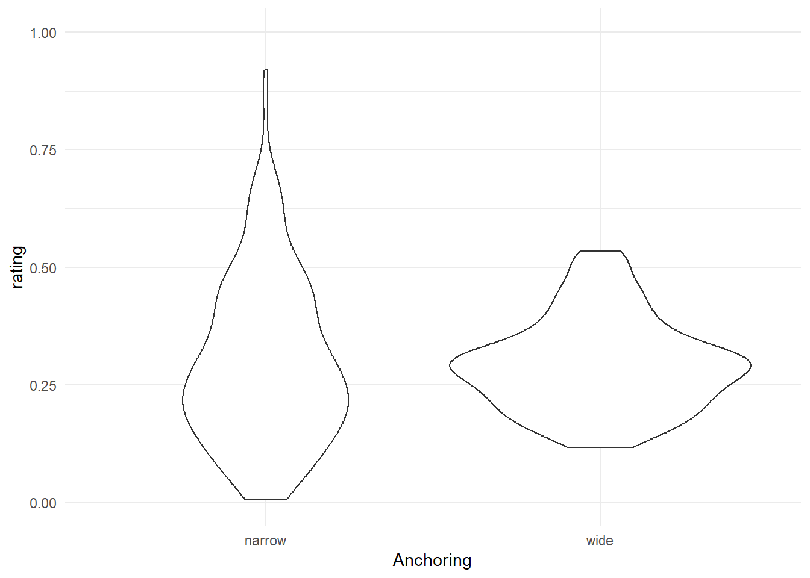
The two response distributions have the same location, but the more narrow anchoring produces a wider dispersion of responses. How would we confirm this statistically? The Brms engine can link predictors to any other parameter of the response distribution, which teh author of the package calls distributional models. They have an immense potential as they relax another assumption of GLM, namely that all variance parameters must strictly follow the mean-variance relationship demanded by a distribution family. As we seen, one can easily create a case where this assumption is violated.
The brms engine uses a parametrization of the beta distribution (other than the more common a, b parametrization), where \(\mu\) is the location and \(phi\) is a scale parameter. Different to what its name may suggest, a large scale is not an increase variance, but rather the opposite: It is comparable to the number of trials in a binomial process. The more trials there are, the tighter the distribution becomes.
For Beta distributions, a large \(\phi\) results in reduced dispersion and vive versa
. Accordingly, when used in a distributional model, a positive effect decreases variance.
When estimating dispersion or scale parameters, we have to regard that these are positive, strictly. The Brms engine simply extends the principle of link functions to parameters other than the \(\mu\) and sets a default log link for \(\phi\). In order to estimate the changes in \(\mu\) and \(\phi\) simultaneously, the brms engine receives two regression formulas. Having multiple formulas for a regresson model is a notable extension of the R model specification language, which is why Brms brings its own command bf() to collect these. We run a distributional Beta regression on the simulated rating scale responses:
The coefficient table below contains the two regular coefficients and as expected, there is no difference in location. The intercept on scale parameter \(\phi\) is the scale in the narrow condition (with wider variance). The treatment effect on \(\phi\) is positive on the log scale, which means it is deflates variance, just as expected.
| parameter | fixef | center | lower | upper |
|---|---|---|---|---|
| b_Intercept | Intercept | -0.318 | -0.544 | -0.095 |
| b_phi_Intercept | NA | 1.630 | 1.247 | 1.986 |
| b_Anchoringwide | Anchoringwide | -0.529 | -0.788 | -0.274 |
| b_phi_Anchoringwide | NA | 1.504 | 0.968 | 2.023 |
In [#EXgaus], the Exgaussian model seemed to sit well with reaction times, accomodating their left skew better. But if we review the participant-level plots carefully, we see different shapes. There is visible differences in variance, as well as in skew. The following distributional model estimates the same location effects (PrimeGeek), but give all participants their own shape, by a random factor.
Two distributional parameters, \(\sigma\) for variance and \(\beta\) for skew are added to the multi-line formula interface. The maximum distributional model would estimate fully separate distributions per every participant and condition. But, since the two response distributions (Geek/nogeek) are similar for most participants, a reduced predictor term is used, assuming that variance and shape are not affected by PrimeGeek:
Note that on such exotic parameters, Brm sometimes has difficulties in finding valid good starting values for the MCMC walk. Like here, it often helps to fix all starting values to Zero.
If participants show different patterns of randomness, we should see that in participant-level variation of \(\sigma\) and \(\beta\), which is confirmed by certainly positive variance estimates.
| parameter | center | lower | upper |
|---|---|---|---|
| cor_Part__Intercept__PrimeGeekTRUE | -0.104 | -0.389 | 0.216 |
| sd_Part__beta_Intercept | 0.474 | 0.394 | 0.589 |
| sd_Part__Intercept | 0.113 | 0.095 | 0.137 |
| sd_Part__PrimeGeekTRUE | 0.027 | 0.020 | 0.035 |
| sd_Part__sigma_Intercept | 0.445 | 0.352 | 0.564 |
Note that the Bayr package does not fully support distributional models, yet, and we have to make without some of the high-level commands, such as grpef.
Can we think of a reason for why participants differ in the skew of their response distribution? Perhaps. Highly, motivated participants are constantly pushing against the physical boundaries of the system, creating a sharp left rise.
Generalized Linear Models gave us control over the average shape of randomness, average variance and average skew. When we use these models, we gain control over the data generating process on an individual level. Distributional models have enormous potential for research and applications. Rating scales are vulnerable to different response patterns when the anchoring is ambivalent. But that is not the only possible response pattern. For example, in our own studies on the Uncanny Valley effect, we used analog rating scales and found some participants to reduce the task to a binary answer (left or right end). A Beta distribution can handle such a pattern well, but only if it is consistent.
Variance and skew may even carry additional information, for example on mental workload. Imagine you are evaluating a simulator-based driver training, designed with the idea that movement tasks are better learned if you begin fast, not accurate. This training uses speed episodes, where the trainee is asked to do 20% faster, at the expense of accuracy. In such an experiment, workload can play a moderating factor, because if you work very hard, you can be fast and accurate at the same time. And a few things you only learn, when you try really hard. Try you must!
Egan, D. Individual differences in human-computer interaction. In M. Helander, ed., Handbook of Human Computer interaction. Elsevier Science Publishers, Amsterdam, The Netherlands, 1988, 543–568.↩